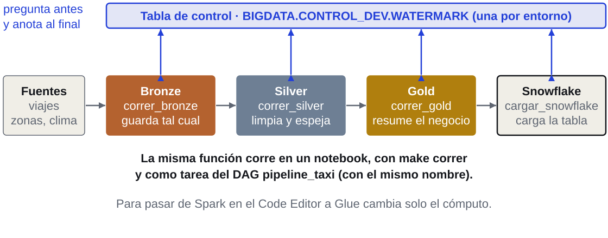

Big Data e Ingeniería de Datos
Clase 7 · Un pipeline completo en dev y cómo llevarlo a prod
Posgrado UdeM · 23 nov 2026
Antes de la clase, cada persona migró su cuenta (curso/clase07/README.md) y dejó abierto el Code Editor con una terminal. Si el Space se apagó (se apaga solo tras 60 minutos sin uso), se enciende con Run space. La clase tiene siete partes: aclarar lo que cambia respecto a las clases 5 y 6; entender dónde corre cada cosa (dev y prod); construir el pipeline paso a paso en un notebook; correrlo con make y con Airflow; reprocesar a propósito y encontrar el duplicado con Athena; dimensionar con tiempos reales; y llevarlo a prod con un pull request. Hoy el trabajo es individual y la única ayuda es el instructor; el Taller 2 se hace en equipos y arranca mañana. Tiempo: 1 min. Siguiente: la pregunta de la clase.
¿Cómo construyo un pipeline en dev, lo llevo a prod sin duplicar nada y sé cuánto cómputo necesita?
Caso del curso: ¿la lluvia cambia los viajes en NYC?
Problema: en las clases 5 y 6 cada persona escribió funciones que corrían en su máquina. Un pipeline de verdad corre en la nube, lo ejecuta un programa y no una persona, y a veces se repite: por un fallo, por un reproceso o por una prisa. Si esa repetición duplica filas, cualquier suma queda inflada y nadie recibe un error. Pide a dos personas que digan qué puede salir mal cuando el mismo mes se procesa dos veces y anota las respuestas en una hoja visible: la clase las contesta una por una (duplicados, cifras infladas, costo, prod contaminado desde dev). Conversación de 2 min. Tiempo: 2 min. Siguiente: el mapa de lo que haremos hoy.
Hoy construimos un pipeline de cuatro pasos, lo probamos en dev y lo llevamos a prod

Cambiar de Spark en el Code Editor a Glue es cambiar solo el cómputo.
Problema: hoy mezclamos varias herramientas (un notebook, make, Airflow, Athena, GitHub) y sin un mapa cada una parece suelta. Este diagrama las coloca sobre una sola línea. Las fuentes (viajes, zonas, clima) entran a cuatro pasos. Bronze guarda cada fuente tal como llega. Silver es el espejo limpio de cada fuente: una tabla por fuente, sin join. Gold responde una pregunta de negocio. Snowflake recibe la tabla de gold para consultarla con SQL. Arriba está la tabla de control, BIGDATA.CONTROL_DEV.WATERMARK en dev y CONTROL_PROD en prod: cada paso le pregunta si ya hizo ese mes y le anota una fila al terminar bien. Cada paso es una función con su nombre (correr_bronze, correr_silver, correr_gold, cargar_snowflake) y es la misma en un notebook, con make correr y como tarea del DAG pipeline_taxi. El color cobre es solo de bronze, gris de silver y ocre de gold; el azul, solo de la tabla de control. Tiempo: 2 min. Siguiente: lo que dijimos en las clases 5 y 6 y hoy cambia.
¿Qué dijimos en las clases 5 y 6 que hoy cambia?
Las clases 1 a 6 ya se dictaron y sus notebooks y decks no se reescriben: aquí se aclaran en voz alta. Son seis cosas, repartidas en tres slides. Tono: no es un error de nadie, es que el curso fue construyendo el pipeline por capas y hoy se junta. Tiempo: 1 min. Siguiente: las primeras tres retractaciones.
Tres aclaraciones sobre quién corre qué
«Con las funciones del equipo»
Lee el crudo de dev o prod
Corre el código de la casa
Retractación 1. En el deck de la clase 6 y en el Taller dijimos que el pipeline correría en Glue «con las funciones del equipo». Lo que eso quiere decir es «con el código de tu fork». En Glue corre bronze.py de la casa, que hace lo mismo que las cuatro funciones de ingesta de la clase 5; esas funciones siguen corriendo en la práctica de ingesta (el DAG ingesta_mensual, solo en el Airflow del Code Editor). Su código vuelve a escena en el Taller, en bronze.py, silver.py, gold.py y carga.py. Retractación 2. Dijimos que tus funciones recibían base_bronze=s3://<bucket>/bronze y que Athena leía tu bronze: no. Tu bronze_alumno se quedó en el disco del Code Editor; Athena lee el crudo (_crudo/) del lake. Desde hoy el lake está separado por entorno: s3://<lake>/dev/... y s3://<lake>/prod/... Retractación 3. El lab de la clase 6 era una versión para entender, no lo que corre en Glue; la tabla «función del lab, función de la casa» está en el README. Y el silver de la casa filtra pero no deduplica: los 13 907 descartes de enero (19 663 930 viajes en bronze y 19 650 023 en silver) vienen de los filtros, no de duplicados. Tiempo: 2 min. Siguiente: tres aclaraciones más.
Tres aclaraciones más: control, modo local y rol
Local, muestra, spark_local
ACCOUNTADMIN y COMPUTE_WH
Retractación 4. En la clase 5 la tabla de control era una puerta («SE SALTÓ»); en Glue, hasta ayer, era solo un registro. Hoy es una puerta en todos lados y con cualquier cómputo: si hay registro y no pides reprocesar, se salta, en un notebook, con make, en Airflow y en Glue. Retractación 5. Desaparecen el entorno local, la muestra y spark_local: el Code Editor ahora es un cómputo (code_editor) que lee y escribe en S3 de dev. Antes «local» significaba cuatro cosas distintas; ahora el entorno es dev o prod, el cómputo es code_editor o Glue, y Airflow es el del Code Editor o el de la VM. Retractación 6. En las clases 1 a 6 usamos ACCOUNTADMIN y COMPUTE_WH. Para todo lo del Taller se usan BIGDATA_DEV y BIGDATA_WH: ACCOUNTADMIN no puede crear ni alterar en BIGDATA.DEV, y BIGDATA_WH es el warehouse que tiene el freno de costo. Todo .sql de hoy empieza con USE ROLE BIGDATA_DEV; USE WAREHOUSE BIGDATA_WH; USE DATABASE BIGDATA;. Tiempo: 2 min. Siguiente: lo que cambia en el lake y en Snowflake, en una tabla.
Antes y ahora: lake, control y comandos
bronze/ y muestra/ en la raíz
silver fhvhv_trips/pickup_date
CONTROL_DEV y CONTROL_PROD
Esta tabla es la misma del README de la clase 7. Primera fila: el lake. Segunda: silver ya no está particionado por día de recogida; es el espejo de bronze, una tabla por fuente (fhvhv, clima, taxi_zones) con carpeta mes=AAAA-MM. Tercera: la tabla de control de la práctica (BIGDATA.CONTROL.WATERMARK) queda como historia; las del pipeline son una por entorno. Cuarta: DAILY_ZONE_METRICS deja de ser «la tabla»; cada equipo nombra las suyas y viven en BIGDATA.DEV o BIGDATA.PROD. Quinta: make muestra y make run-local quedan como avisos que salen con error; se usa make correr. Si alguien tiene un .sql de la clase 6 de Athena, ya no funciona: apuntaba a bronze/ de la raíz; hoy se usan los de curso/clase07/athena. Tiempo: 2 min. Siguiente: comprobar que tu cuenta ya migró.
Antes de seguir, comprueba tu migración
Haz clic en Terminal > New Terminal.
Escribe cd ~/bigdata y presiona Enter.
Escribe make doctor: no debe marcar fallos.
Escribe make rutas ENTORNO=dev: las rutas empiezan con dev.
NOTEBOOK Code Editor · terminal
Dónde: el Code Editor, menú Terminal > New Terminal. Esta es la comprobación «Antes de seguir» del README; la mayoría ya la hizo antes de la clase, pero hoy nadie avanza sin ella. Entrada 1: cd ~/bigdata entra a la carpeta del repositorio (siempre se escribe, para no depender de dónde estaba la terminal). Entrada 2: make doctor es un diagnóstico (versiones, Python 3.12, AWS, Snowflake, jars de S3A, que PIPELINE_ENTORNO sea dev). Salida esperada: una lista de líneas ok sin ningún fallo; si dice «PIPELINE_ENTORNO=prod en esta terminal», corre unset PIPELINE_ENTORNO. Si dice que faltan los jars, corre make jars-s3a. Entrada 3: make rutas ENTORNO=dev imprime la tabla de carpetas del entorno: cada ruta debe empezar con s3://bigdata-lake-<tu cuenta>-us-east-2/dev/. Es solo informativo: no cambia con qué entorno corres. Quien no pasó la migración levanta la mano y se queda con el instructor: es el riesgo principal de la clase. Tiempo: 2 min. Siguiente: dónde corre cada cosa.
¿Quién decide si lo que corro es dev o prod?
Problema: hasta ayer, dev y prod compartían la carpeta bronze/. Una corrida de prueba en dev creaba un lote nuevo y la siguiente corrida de silver en prod lo leía sin que nadie lo hubiera decidido. La pregunta de esta parte es quién decide el entorno. Respuesta corta, que se desarrolla en las próximas slides: tú no. Tiempo: 1 min. Siguiente: el mapa de carpetas y esquemas.
Dev y prod no comparten ninguna carpeta de S3 ni ningún esquema de Snowflake

El rol BIGDATA_DEV no puede escribir en PROD ni en CONTROL_PROD.
Problema: ¿cómo evitamos que algo de dev contamine prod? Con carpetas y esquemas separados. Dev escribe en s3://<lake>/dev/ y en BIGDATA.DEV; prod, en s3://<lake>/prod/ y en BIGDATA.PROD. Cada entorno tiene además su tabla de control: BIGDATA.CONTROL_DEV.WATERMARK y BIGDATA.CONTROL_PROD.WATERMARK. code/, dags/, logs/ y tmp/ no son de ningún entorno: son del lake. Todo lo que corres desde el Code Editor (terminal, notebook, make, Airflow del Code Editor) es dev. Prod solo lo escribe la VM de Airflow, que recibe el código por CI/CD al hacer merge a main. Honestidad sobre el alcance: son barandillas contra errores, no un control contra el dueño de la cuenta; el control real es Snowflake, donde el rol BIGDATA_DEV no puede escribir en PROD ni en CONTROL_PROD, más el pull request. Lo vamos a comprobar con un INSERT que falla al final de la clase. Tiempo: 2 min. Siguiente: cómo se decide el entorno.
El entorno no se elige: lo decide dónde corres
Terminal, notebook o make
Airflow de la VM, tras CI/CD
Problema: si el entorno fuera un parámetro, alguien lo cambiaría a prod por error o por prisa. Regla del curso: el entorno no es un parámetro de nadie. entorno_actual() lee la variable PIPELINE_ENTORNO, que vale dev por defecto; scripts/correr.sh y airflow-local.sh la fuerzan a dev; la VM la fija a prod en su docker-compose. Si en el Code Editor escribes make correr ENTORNO=prod, el comando avisa que ignora el entorno y sigue en dev. En el código, prod se rechaza con code_editor y se rechaza siempre si la conexión a Snowflake no usa el rol BIGDATA_PROD. Hay dos cosas distintas que sí se eligen: el cómputo (dónde se calcula) y el límite de filas. Entorno y cómputo son independientes: en dev puedes calcular con Spark del Code Editor o con Glue. Tiempo: 2 min. Siguiente: el archivo pipeline.yaml.
pipeline.yaml es lo único que cambias para correr
# pipeline.yaml (raíz del repositorio)
computo: code_editor # glue_small | glue_medium | glue_large
limite: "1000" # "1000" | "100000" | "todos"
mes: "2024-01" # AAAA-MM; vacío = config/dev.yaml
reprocesar: false # true = ignora la tabla de control
El entorno no aparece: es automático. Lo que escribas en un comando o en el formulario gana sobre este archivo.
Problema: ¿dónde se cambian las perillas sin tocar código? En un solo archivo, con un comentario por línea. Computo decide dónde se calcula; limite, cuántas filas se leen de cada fuente (1 000 o 100 000 con code_editor; todos solo con Glue); mes, qué mes se procesa; reprocesar, si se ignora la tabla de control. Precedencia: el argumento del comando, de la función o del formulario del DAG gana sobre pipeline.yaml, y este gana sobre el valor por defecto. Un cambio en el yaml tarda unos 30 segundos en llegar al formulario del DAG. Prod no lee este archivo: siempre usa Glue y limite todos. Si el yaml trae un valor inválido (por ejemplo limite: 12345), el pipeline no se rompe: usa el valor por defecto y avisa en el encabezado. Tiempo: 2 min. Siguiente: la misma función desde tres puertas.
El mismo paso corre desde un notebook, con make o en Airflow, y solo cambia el cómputo

Un solo código, tres formas de lanzarlo, dos lugares donde calcular.
Idea de ingeniería: una sola función por paso, sin copias. correr_bronze, correr_silver, correr_gold y cargar_snowflake viven en pipeline/correr.py. Un notebook las llama como funciones de Python; make correr las llama por el CLI python -m pipeline.run; el DAG pipeline_taxi tiene una tarea por función, con el mismo nombre. Todas imprimen el mismo encabezado y cierre, que lo imprime solo correr.py. Pasar de Spark en el Code Editor a Glue cambia solo el cómputo: no cambia una línea de lógica. Eso es lo que permite probar barato en code_editor y confiar en que en Glue hace lo mismo. Con glue_*, la función lanza el job de Glue con el código de tu árbol de trabajo (se sube a code/dev/), nunca con el de main. Tiempo: 2 min. Siguiente: la tabla «dónde se cambia cada cosa».
Dónde se cambia cada cosa (1 de 2)
yaml, LIMITE= o formulario
yaml, COMPUTO= o formulario
Esta es la tabla aprobada «dónde se cambia cada cosa»; está en el README. Fila 1: el límite de filas (1000, 100000, todos) en pipeline.yaml, con LIMITE= en make, con limite= en la función o en el formulario del DAG; todos solo con Glue y en prod siempre es todos. Fila 2: el cómputo, igual; es lo único que cambia entre el Code Editor y Glue. Fila 3: el mes y si se reprocesa; la tabla de control decide si se salta. Fila 4: el entorno no se cambia: es automático. Fila 5: pasar algo a prod es PR, merge a main, CI/CD y el DAG en la VM; nunca desde el Code Editor. Fila 6: la lógica del pipeline vive solo en bronze.py, silver.py y gold.py (y la tabla de tu gold en carga.py); lo demás es de la casa. Tiempo: 2 min. Siguiente: pasamos al Notebook 1.
Dónde se cambia cada cosa (2 de 2)
No se cambia: es automático
Solo bronze, silver y gold
Segunda mitad de la tabla «dónde se cambia cada cosa». Fila 4: el entorno no se cambia: es automático; el código se niega a correr prod fuera de la VM. Fila 5: pasar algo a prod es PR, merge a main, CI/CD y el DAG en la VM; nunca desde el Code Editor. Fila 6: la lógica del pipeline vive solo en bronze.py, silver.py y gold.py (y la tabla de tu gold en carga.py); lo demás es de la casa. Tiempo: 1 min. Siguiente: pasamos al Notebook 1.
Ahora continuamos con el Notebook 1
– Cada función, una por una, con 1 000 viajes.
– Sabrás por qué la puerta evita duplicar un mes.
NOTEBOOK 01_construir_paso_a_paso
Transición, en voz alta: ahora continuamos con el Notebook 1, 01_construir_paso_a_paso. Problema: un pipeline es una cadena de funciones; si las dejas correr sin haberlas entendido, el día que algo falle no sabrás por dónde empezar. Aquí las construimos una por una con 1 000 viajes en lugar de 20 millones y las probamos varias veces. El instructor conduce; cada persona sigue en su propio Code Editor, celda por celda, con Shift + Enter. Este notebook escribe el crudo y un lote de bronze en dev (s3://<tu bucket>/dev/), anota en CONTROL_DEV.WATERMARK lo que termina bien y crea una tabla vacía en BIGDATA.DEV; no toca prod. Importa las herramientas de la casa y nunca las copia. Tiempo: 1 min. Siguiente: abrir el notebook.
Copias los dos notebooks a una carpeta tuya para no tocar los del repositorio
# En la terminal del Code Editor, una línea a la vez y Enter:
mkdir -p ~/clase07_mis_notebooks
cp ~/bigdata/curso/clase07/0*.ipynb ~/clase07_mis_notebooks/
ls ~/clase07_mis_notebooks
Debes ver los dos archivos .ipynb. Así tus cambios no entran a un commit por accidente.
NOTEBOOK Code Editor · terminal
Dónde: la terminal del Code Editor. Problema: si editas el notebook dentro del repositorio, el siguiente git pull choca con tus cambios y el archivo puede entrar a un commit sin que lo notes. Entrada: mkdir -p crea la carpeta ~/clase07_mis_notebooks (la opción -p evita error si ya existe); cp copia los dos notebooks (0*.ipynb coincide con 01_ y 02_); ls los lista. Salida esperada: 01_construir_paso_a_paso.ipynb y 02_funciones_listas.ipynb. Error común: «No such file or directory» al copiar significa que el repositorio no está en ~/bigdata o que falta el git pull; se corre cd ~/bigdata && git pull. Tiempo: 1 min. Siguiente: abrir el notebook y elegir el kernel.
Abres el notebook 1 y eliges el kernel
Code Editor · explorador de archivos
Abre la carpeta clase07_mis_notebooks.
Haz doble clic en 01_construir_paso_a_paso.ipynb.
Arriba a la derecha elige el kernel Python (bigdata).
Apaga Airflow con make airflow-local-down.
NOTEBOOK 01_construir_paso_a_paso
Dónde: el Code Editor. El kernel es el programa Python que ejecuta las celdas; si eliges uno equivocado, las librerías no están instaladas. Se elige siempre Python (bigdata), que es el .venv del proyecto. No se eligen los kernels Glue PySpark o SparkMagic: abren una sesión de AWS Glue en la nube y esa sesión cobra mientras está abierta. Paso 4: en esta máquina solo cabe un proceso de Spark a la vez (7.6 GB compartidos con Airflow); por eso Airflow del Code Editor debe estar apagado mientras se usan los notebooks. Error común: no aparece Python (bigdata): corre cd ~/bigdata && make reparar-entorno y recarga la ventana. Tiempo: 1 min. Siguiente: la preparación.
Ejecutas las Celdas 1 a 3
Haz clic en la Celda 1 y presiona Shift + Enter.
Ejecuta la Celda 2: imprime la corrida y el encabezado.
Ejecuta la Celda 3: imprime las carpetas de dev.
NOTEBOOK 01_construir_paso_a_paso
Celda 1: verifica que el kernel sea el del proyecto (la ruta debe contener .venv), que Java esté disponible y deja el repositorio en la ruta de búsqueda para escribir from pipeline... import. Celda 2: cargar_configuracion(limite="1000") arma la corrida y banner(corrida, "bronze", "2024-01") imprime el mismo encabezado que mostrarán todas las corridas del curso. Celda 3: donde_estoy("dev") imprime una tabla con la ruta de cada capa. Qué observar: entorno='dev', computo='code_editor', limite='1000'; en Lee aparece _crudo/ (el archivo tal como se descargó) y en Escribe, la carpeta de bronze de dev; la última línea es la tabla de control, BIGDATA.CONTROL_DEV.WATERMARK. Error común: el AVISO «este kernel no es el del proyecto»; se elige Python (bigdata) y se reinicia el notebook. Tiempo: 2 min. Siguiente: el encabezado, línea por línea.
El encabezado dice entorno, cómputo, qué lee y qué escribe antes de tocar nada
Entorno : DEV
Cómputo : code_editor
Paso : bronze
Mes : 2024-01
Límite : 1000
Reprocesar : false
Lee : s3://<tu-lake>/dev/bronze/_crudo/fhvhv/mes=2024-01/
Escribe : s3://<tu-lake>/dev/bronze/fhvhv/mes=2024-01/
Control : BIGDATA.CONTROL_DEV.WATERMARK
En tu pantalla, <tu-lake> es bigdata-lake-<tu cuenta>-us-east-2. Lee y Escribe repiten una línea por tabla.
NOTEBOOK 01_construir_paso_a_paso
Problema: ¿cómo sé, antes de que se ejecute algo, en qué entorno estoy y dónde va a escribir? El encabezado lo dice. Es el mismo en la consola, el notebook, el log de Airflow, el log de Glue y prod (en prod, la línea Entorno dice PROD con una advertencia). Las líneas Lee y Escribe salen de la misma función de rutas que usa el código (ruta_lake), no se escriben a mano. Aquí se recortó el nombre del bucket para que quepa; en tu pantalla es bigdata-lake-<tu cuenta>-us-east-2. Al final de cada paso hay un cierre con una línea por tabla: filas leídas, escritas y si se saltó o registró; lo veremos en la Celda 20. Tiempo: 2 min. Siguiente: el crudo.
Ejecutas las Celdas 4 y 5
Ejecuta la Celda 4: Spark enciende y dice su versión.
Ejecuta la Celda 5: baja los tres archivos crudos.
Espera: los viajes de enero pesan unos 450 MB.
NOTEBOOK 01_construir_paso_a_paso
Celda 4: get_spark("code_editor", toca_s3=True) crea una sesión local[2] con 2 GB de memoria que lee y escribe directamente en S3; necesita los dos .jar de S3A que bajó make jars-s3a. Si faltan, el error lo dice con todas sus letras. Celda 5: traer_crudo_viajes, traer_crudo_taxi_zones y traer_crudo_clima revisan en este orden: ¿el archivo ya está en _crudo/? no se descarga; ¿está en la ruta del diseño anterior? se mueve; si no está en ninguna parte, se descarga de la fuente. Cada una devuelve la ruta s3:// completa y dice en voz alta qué hace (YA ESTÁ, DESCARGA...). La primera vez baja unos 450 MB; si migraste con make migrar-clase07 y tenías el crudo, aparece YA ESTÁ. Con 30 cuentas a la vez la descarga puede tardar: es el momento de contar el primer problema de ingeniería de la clase, que el crudo se baja una sola vez y se guarda tal cual. Error común: «Faltan los jars de S3A»: make jars-s3a. Tiempo: 2 min. Siguiente: leer con un límite.
leer_crudo devuelve siempre las mismas 1 000 filas, y se comprueba leyendo dos veces
viajes = leer_crudo(spark, "dev", "fhvhv", "2024-01", limite=1000)
otra = leer_crudo(spark, "dev", "fhvhv", "2024-01", limite=1000)
print(viajes.count()) # 1000
print(viajes.collect() == otra.collect()) # True
Un limit suelto de Spark podría traer filas distintas cada vez; leer_crudo usa coalesce(1).limit(n).
NOTEBOOK 01_construir_paso_a_paso
Problema: más adelante vamos a reprocesar el mismo mes y a comparar lo que sale. Eso solo sirve si cada lectura con límite trae las mismas filas. Un limit suelto de Spark puede devolver filas distintas según qué tarea termine primero. leer_crudo aplica el límite de forma determinista (coalesce(1).limit(n)): toma siempre las mismas n primeras filas del archivo. Entrada (Celdas 6 y 7): lee 1 000 filas, las cuenta, y lee otra vez para comparar fila por fila con collect(). Salida esperada: 1000 y True. Las Celdas 6 a 8 también muestran cinco columnas de los viajes y leen las zonas (265 filas) y el clima (31 días de enero). Si falla con otro número de filas, revisa que limite sea 1000 y no None. Tiempo: 2 min. Siguiente: la tabla de control.
La tabla de control guarda una fila por paso terminado
Una fila de BIGDATA.CONTROL_DEV.WATERMARK
Problema: si bronze corre dos veces para enero, enero queda dos veces: cada ingesta escribe un lote nuevo y nunca borra los anteriores. Hace falta que el pipeline pregunte antes de trabajar. La respuesta es la tabla de control: una tabla de Snowflake por entorno donde cada paso anota una fila al terminar bien. La clave de consulta es (TABLA, CAPA, MES). TABLA no lleva el entorno: es fhvhv, taxi_zones, clima, o el nombre de tu tabla de gold; MES es AAAA-MM, o sin_mes para las zonas. Las columnas completas, en orden, son FUENTE, CAPA, TABLA, MES, FILAS, INICIO, REPROCESAR, COMPUTO, LIMITE y LEIDAS; las últimas tres se guardan solo para informar, la puerta no las mira. Reprocesar no borra nada: cada corrida deja su fila y la historia queda completa. La tabla BIGDATA.CONTROL.WATERMARK de las clases 5 y 6 queda como historia. Tiempo: 1 min. Siguiente: la regla de la puerta.
La puerta tiene tres casos: sin registro ingesta, con registro salta, con reprocesar ingesta siempre

Es la misma regla en un notebook, con make, en Airflow, en Glue y en prod.
La regla de la puerta es una sola y es la del autor del curso: no hay lógica de alcance ni de comparar filas. Caso 1: no hay registro y reprocesar es false: se ingesta. Caso 2: hay registro y reprocesar es false: se salta, sea cual sea el número de filas, el cómputo o el límite del registro. Caso 3: reprocesar es true: se ingesta siempre; los duplicados que eso cause son problema de silver, y es justo lo que veremos hoy. Esto vale en todos lados: si el notebook registró enero, make correr dirá SE SALTÓ; si lo registró Airflow, el notebook dirá SE SALTÓ. Y el registro se anota al final y solo si el paso terminó bien: si falla a la mitad, no queda registro y el mes se puede reintentar. Vamos a construir esta puerta, función por función. Tiempo: 2 min. Siguiente: un ensayo sin tocar la tabla de verdad.
Ejecutas las Celdas 9 y 10
Ejecuta la Celda 9: consulta CONTROL_DEV y sale una lista vacía.
Ejecuta la Celda 10: instala una tabla de control de ensayo.
Lee que la tabla de Snowflake no se toca.
NOTEBOOK 01_construir_paso_a_paso
Problema: vamos a equivocarnos mientras construimos la puerta y no queremos dejar filas falsas en la tabla real: una fila de «ya procesado» sin datos detrás es justo el error que la tabla de control debe evitar. Celda 9: consultar_control("dev", "fhvhv", "bronze", "2024-01") va a Snowflake con el rol BIGDATA_DEV y devuelve [] si ningún paso ha terminado. Si tu cuenta ya trae un registro de una corrida anterior, queda anotado y se explica más abajo. Celda 10: instalar_backend(ControlEnMemoria()) cambia solo dónde se guardan los registros, no la regla; la puerta y el registro corren igual. Es una herramienta pensada para pruebas, y aquí es exactamente eso: un ensayo. Error común: «No se encontró la tabla BIGDATA.CONTROL_DEV.WATERMARK»: falta make snowflake o make migrar-clase07. Tiempo: 2 min. Siguiente: la primera versión de debe_ingestar.
Primera versión de debe_ingestar: si no hay registro se ingesta, y si lo hay se salta
def debe_ingestar(corrida, tabla, mes):
registros = consultar_control(corrida.entorno, tabla, "bronze", mes)
hay_registro = len(registros) > 0
return not hay_registro
print(debe_ingestar(corrida, "fhvhv", "2024-01")) # True
Firma idéntica a la de bronze.py. La capa siempre es bronze, porque esta es la puerta de bronze.
NOTEBOOK 01_construir_paso_a_paso
Entrada (Celda 11): la función recibe la corrida (de ahí sale el entorno), la tabla y el mes; consulta la tabla de control con la clave (tabla, bronze, mes) y devuelve True si no hay registros. Salida esperada: True, porque la tabla de ensayo está vacía. Esta versión responde solo a la primera columna de la regla («¿hay registro?»); todavía no sabe reprocesar. Para probar el segundo caso necesitamos que exista un registro, y eso lo escribe otra función: registrar_ingesta. Pregunta a la clase: ¿qué pasa con esta versión si queremos repetir un mes a propósito? Respuesta: no se puede, y por eso hay una segunda versión. Tiempo: 2 min. Siguiente: registrar_ingesta.
registrar_ingesta anota la fila de bronze, solo después de escribir
def registrar_ingesta(corrida, tabla, mes, fuente,
leidas, filas, inicio):
registrar_control(corrida, tabla, "bronze", mes,
filas, inicio, fuente, leidas)
inicio = datetime.now(UTC).replace(microsecond=0)
registrar_ingesta(corrida, "fhvhv", "2024-01",
url, 1000, 1000, inicio)
filas son las escritas; leidas es solo informativa. Si la escritura falla, esta función no se llama.
NOTEBOOK 01_construir_paso_a_paso
Problema: ¿cuándo se anota que un mes ya se procesó? Si se anota antes de escribir y la escritura se cae a la mitad, la tabla dice «procesado» pero los datos no están, y la puerta salta el mes para siempre. Si se anota después y la escritura falla, no queda registro y el mes se puede reintentar. Por eso: se registra al final y solo si todo salió bien. registrar_control es la función de la casa que escribe una fila; nuestra función solo la llama con la capa bronze. Entrada (Celda 12): registra una fila de ensayo y la imprime. Salida esperada: un diccionario con fuente, capa, tabla, mes, filas, inicio, reprocesar, computo, limite y leidas. Tiempo: 2 min. Siguiente: la puerta con un registro.
Ejecutas las Celdas 12 y 13
Ejecuta la Celda 12: imprime la fila anotada.
Ejecuta la Celda 13: pregunta por tres claves distintas.
Comprueba que solo fhvhv de enero dice False.
NOTEBOOK 01_construir_paso_a_paso
Qué observar: ahora hay una fila con la tabla, la capa, el mes, filas, leidas, el computo, el limite y reprocesar. Al volver a preguntar a la puerta, fhvhv de enero dice False (se salta); el clima del mismo mes dice True y fhvhv de febrero dice True. La puerta salta solo la clave (fhvhv, bronze, 2024-01): el clima de enero y los viajes de febrero siguen abiertos. Esto responde una duda frecuente: ¿registrar fhvhv bloquea todo enero? No: la clave es la combinación tabla, capa y mes. Tiempo: 2 min. Siguiente: por qué se registra al final.
Se registra al final: si la escritura se cae, no queda registro y el mes se reintenta
def ingesta_de_mentira(corrida, tabla, mes, falla):
if not debe_ingestar(corrida, tabla, mes):
return "SE SALTÓ"
inicio = datetime.now(UTC).replace(microsecond=0)
if falla:
raise RuntimeError("se cayó la escritura")
registrar_ingesta(corrida, tabla, mes, url, 1000, 1000, inicio)
return "REGISTRÓ"
El registro va después del posible fallo. Se prueba con falla=True, después con False y otra vez con False.
NOTEBOOK 01_construir_paso_a_paso
Entrada (Celda 14): una ingesta de mentira que puede fallar a la mitad; empieza con una tabla de control vacía. Primero con falla=True: lanza el error, y después del fallo no queda ningún registro. Luego con falla=False: REGISTRÓ. Luego otra vez con falla=False: SE SALTÓ. Salida esperada: «La ingesta falló: se cayó la escritura a la mitad», «Registros después del fallo: 0», «Reintento: REGISTRÓ» y «Otro intento: SE SALTÓ». Si hubiéramos registrado al principio, el reintento habría quedado bloqueado por una fila que dice «procesado» sin que lo estuviera. Esta es la razón por la que el registro va al final. Tiempo: 2 min. Siguiente: la versión final de la puerta.
La puerta final suma reprocesar: si vale true, deja pasar sin mirar la tabla
def debe_ingestar(corrida, tabla, mes):
if corrida.reprocesar:
return True
registros = consultar_control(corrida.entorno, tabla, "bronze", mes)
return len(registros) == 0
Las tres filas de la regla: sin registro ingesta, con registro salta, con reprocesar ingesta siempre.
NOTEBOOK 01_construir_paso_a_paso
Problema: hay motivos legítimos para repetir un mes: la fuente corrigió sus datos, se cambió el cómputo, el equipo quiere medir otra cosa. La versión 1 no permite repetir nunca. La corrida trae una perilla, reprocesar; si vale true, la puerta ignora la tabla de control. Reprocesar no borra nada: cada corrida deja su fila y la historia queda completa. Esta es la tercera fila de la regla. Entrada (Celda 15): se redefine la función; no imprime nada. Después (Celda 16) se prueban los tres casos contra mes_ya_procesado, la función de la casa que contiene la misma regla con la pregunta al revés. Tiempo: 2 min. Siguiente: las tres pruebas.
Ejecutas las Celdas 15 a 17
Ejecuta la Celda 15: redefine debe_ingestar con reprocesar.
Ejecuta la Celda 16: tres casos, y cada uno dice coincide.
Ejecuta la Celda 17: vuelves a la tabla de Snowflake.
NOTEBOOK 01_construir_paso_a_paso
Salida esperada de la Celda 16: tres filas. «False, False: ingesta, coincide»; «True, False: salta, coincide»; «True, True: ingesta, coincide». La función caso arma cada situación desde cero, con una tabla de ensayo limpia y dataclasses.replace para copiar la corrida cambiando solo reprocesar. Si alguna fila dice DIFERENTE, hay un error en la versión final; revisa la Celda 15. Con esto, nuestras dos funciones (debe_ingestar y registrar_ingesta) son las mismas que ya trae bronze.py. La Celda 17 llama instalar_backend(None): fin del ensayo. A partir de aquí, todo se anota en BIGDATA.CONTROL_DEV.WATERMARK de verdad. Tiempo: 2 min. Siguiente: la tercera función de bronze.
agregar_metadatos hoy no agrega nada, a propósito
– Agregar cinco columnas: lote, fecha, huella, fuente y archivo.
– Nada: devuelve la tabla tal cual. La escribe tu equipo.
NOTEBOOK 01_construir_paso_a_paso
Lo decimos en voz alta: es un problema a propósito. agregar_metadatos(df, fuente, archivo_origen, id_lote, fecha_ingesta) debería dejar, después de las columnas originales y en este orden, _fecha_ingesta, _id_lote, _hash_fila, _fuente y _archivo_origen. La huella _hash_fila identifica cada fila por sus valores. Hoy la función devuelve df tal cual; lleva dentro la marca # PENDIENTE(equipo), que es lo que buscan las pruebas del equipo para decir PENDIENTE en lugar de FALLA. Consecuencia: bronze guarda las filas sin decir de qué lote ni de qué archivo vienen, y silver no podrá saber qué filas ya vio. Escribir esta función es parte del trabajo de tu equipo en el Taller; hoy no la escribimos. Tiempo: 1 min. Siguiente: poner nuestras funciones a trabajar en el pipeline.
Ejecutas las Celdas 18 y 19
Ejecuta la Celda 18: define agregar_metadatos sin metadatos.
Ejecuta la Celda 19: usar_mis_funciones las pone en bronze.
Comprueba tres líneas que empiezan con USA.
NOTEBOOK 01_construir_paso_a_paso
El pipeline ya trae su propio main de bronze, que hace la receta completa para las tres tablas: puerta, crudo, lectura, metadatos, escritura del lote y registro. Para que use nuestras tres funciones en este notebook, sin tocar todavía los .py, usamos usar_mis_funciones. Funciona solo en este proceso: si reinicias el kernel, vuelven las del repositorio. Salida esperada: «USA agregar_metadatos del cuaderno en pipeline.bronze (solo en este proceso)» y lo mismo para debe_ingestar y registrar_ingesta. Con un cómputo de Glue esto falla a propósito: tus funciones del notebook viven en este proceso y no viajan a Glue; para Glue se copian a bronze.py. Tiempo: 1 min. Siguiente: la primera corrida.
Ejecutas la Celda 20: bronze corre por primera vez
Ejecuta la Celda 20 y espera el encabezado y el cierre.
Busca tres líneas con REGISTRÓ en el cierre.
Mira la línea ESCRIBE: termina en lote= y una fecha.
NOTEBOOK 01_construir_paso_a_paso
Entrada: correr_bronze(limite="1000") es una de las cuatro funciones de los pasos: la misma que ejecuta make correr PASO=bronze y la primera tarea del DAG pipeline_taxi. Imprime el encabezado, hace el trabajo y cierra con una línea por tabla. Con limite 1000 cada fuente se recorta a 1 000 filas (las zonas son 265 y el clima 31, así que entran completas). Salida esperada: líneas YA ESTÁ (el crudo ya está), LEE (crudo), ESCRIBE (el lote en Parquet), SUBE (el marcador _LOTE_COMPLETO) y CONSULTA/REGISTRA (la tabla de control). Esta es una corrida de verdad: escribe en dev/bronze/ y anota en CONTROL_DEV. Tarda unos minutos en S3 desde el Code Editor; el tiempo exacto se mide en el ensayo. Error común: «AccessDenied» al escribir en S3 significa credenciales vencidas; se cierra y se abre la terminal. Tiempo: 3 min. Siguiente: el cierre.
El cierre dice, por tabla, filas leídas, escritas y la decisión
Cierre : paso=bronze mes=2024-01
fhvhv leyó=1000 escribió=1000 REGISTRÓ
taxi_zones leyó=265 escribió=265 REGISTRÓ
clima leyó=31 escribió=31 REGISTRÓ
Primera corrida: las tres tablas registran. En pantalla cada línea sigue con «en la tabla de control».
NOTEBOOK 01_construir_paso_a_paso
El cierre lo imprime solo pipeline/correr.py, igual en todos lados. Cada línea tiene el nombre de la tabla, las filas que leyó del crudo (limitadas a 1 000 en los viajes), las filas que escribió en el lote y la decisión: REGISTRÓ si trabajó y anotó la fila, o SE SALTÓ si la puerta se cerró. Con limite=1000: fhvhv 1 000 y 1 000, taxi_zones 265 y 265, clima 31 y 31. Tiempo: 1 min. Siguiente: la segunda corrida, sin cambiar nada.
Ejecutas las Celdas 21 a 23: la segunda corrida
Ejecuta la Celda 21 sin cambiar nada.
Comprueba que las tres líneas dicen SE SALTÓ.
Ejecuta las Celdas 22 y 23: una sola carpeta lote=.
NOTEBOOK 01_construir_paso_a_paso
La puerta consultó la tabla de control, encontró el registro de la primera corrida y no hizo nada: no hay lote nuevo, no hay filas repetidas. Termina en segundos. Celda 22: consultar_control devuelve la fila: filas=1000, leidas=1000, computo=code_editor, limite=1000 y reprocesar False. Celda 23: aws s3 ls sobre la carpeta de bronze de fhvhv; debe haber una sola carpeta lote=<fecha>_<código>/, a pesar de las dos corridas. Reprocesar a propósito (reprocesar=True) crearía un segundo lote: todavía no lo hacemos; lo haremos con la consola de Athena abierta. Para recordar: la puerta funciona igual en todos lados. Esta corrida salió de un notebook; si ahora ejecutas make correr PASO=bronze desde la terminal, o lanzas el DAG de Airflow, o usas Glue, la tabla de control es la misma y la respuesta será SE SALTÓ. Tiempo: 2 min. Siguiente: silver.
Silver es el espejo limpio de bronze, una tabla por fuente
– Guarda cada fuente tal como llegó.
– Pone cada columna en su tipo y descarta viajes imposibles.
– limpiar_viajes, clima_diario y limpiar_taxi_zones.
NOTEBOOK 01_construir_paso_a_paso
Problema: bronze guarda las filas como llegaron: viajes con distancia cero, duraciones imposibles, tipos mezclados. Silver es el espejo limpio de cada fuente: silver/fhvhv, silver/clima y silver/taxi_zones, con el mismo nombre que en bronze y sin join. Las funciones de limpieza son de la casa (limpiar_viajes, clima_diario, limpiar_taxi_zones, en silver.py). Las reglas de limpieza de viajes: distancia mayor que cero y menor de 100 millas, tarifa base mayor que cero, duración entre 1 y 180 minutos y recogida con ubicación. Aquí las probamos sobre el lote que acabamos de escribir pero no escribimos silver todavía: eso lo hace el paso silver, con make correr PASO=silver. Silver lee TODOS los lotes completos de bronze del mes. Tiempo: 1 min. Siguiente: probar la limpieza.
Ejecutas las Celdas 24 y 25: la limpieza de silver
Ejecuta la Celda 24: bronze, silver y descartadas.
Mira que empresa dice Uber o Lyft.
Ejecuta la Celda 25: zonas y clima.
NOTEBOOK 01_construir_paso_a_paso
Entrada (Celda 24): leer_capa(spark, "dev", "bronze", "fhvhv", "2024-01") junta todos los lotes completos del mes (hoy hay uno) y silver.limpiar_viajes(bronze, ["2024-01"]) aplica los filtros y los tipos. Salida esperada: Filas en bronze 1000; filas en silver un poco menos; la diferencia son los descartados. Las cifras exactas de tu corrida se anotan en el ensayo (el archivo de enero completo descarta 13 907 de 19 663 930). Qué observar: distancia_mi y duracion_min son números, y empresa ya no es HV0003 sino Uber. Celda 25: las zonas con LocationID como entero (265 filas) y el clima con la fecha como fecha (31 filas). Error común: «No hay ningún lote completo en s3://.../dev/bronze/...»: bronze no corrió; se ejecutan las Celdas 19 a 21. Tiempo: 2 min. Siguiente: qué pasa si el mes entra dos veces.
Ejecutas las Celdas 26 y 27: dos lotes de enero
Ejecuta la Celda 26: silver con dos lotes da el doble.
Ejecuta la Celda 27: deduplicar devuelve las mismas filas.
Di en voz alta: es el segundo problema a propósito.
NOTEBOOK 01_construir_paso_a_paso
Problema: bronze solo agrega; si alguien reprocesa enero, bronze tiene dos lotes con las mismas filas y silver los lee los dos. Lo simulamos sin escribir nada: bronze_viajes.unionByName(bronze_viajes) y la misma limpieza. Salida esperada: las filas de silver con dos lotes son exactamente el doble que con uno. Nadie recibió un error: cada viaje cuenta dos veces. Quien debe impedirlo es silver, con una función: deduplicar(df). En el repositorio hoy devuelve la tabla tal cual, y lo decimos en voz alta: es el segundo problema a propósito (Celda 27: «Filas después de deduplicar: 2×, debería ser N»). Su idea es dejar una sola fila por cada fila distinta, y para eso necesita saber qué filas son la misma: la huella que debería agregar agregar_metadatos. Las dos funciones van de la mano y las dos son del equipo. Tiempo: 2 min. Siguiente: gold.
La pregunta de gold de la casa no es la del Taller
– ¿A qué hora y barrio se paga más por milla?
– Escribes otra, con tu tabla de gold.
NOTEBOOK 01_construir_paso_a_paso
Problema: silver deja tablas limpias, pero nadie decide con una tabla de un millón de viajes. Gold responde una pregunta de negocio con una tabla pequeña. La pregunta de la casa, para aprender la receta, es ¿a qué hora del día y en qué barrio se paga más por milla? No es la pregunta de ningún equipo del Taller 2: la tuya es otra y la escribes tú. La receta de un paso gold es: leer silver (viajes, zonas, clima), juntarlo con silver.enriquecer, aplicar tu función, validar y escribir reemplazando el mes. enriquecer une los viajes con las zonas (por pu_location_id, para saber el barrio) y con el clima (por la fecha), con left join: no se pierde ningún viaje. Gold no tiene huecos: solo agregas tu función a TABLAS_GOLD. Tiempo: 1 min. Siguiente: construir la función.
tarifa_por_milla_por_barrio agrupa por fecha, barrio y franja, y divide las sumas
franja = (F.when(F.hour("pickup_datetime") < 6, "madrugada")
.when(F.hour("pickup_datetime") < 12, "mañana")
.when(F.hour("pickup_datetime") < 18, "tarde").otherwise("noche"))
con_franja.groupBy("fecha", "borough", "franja").agg(
F.count(F.lit(1)).alias("viajes"),
F.sum("distancia_mi").alias("distancia"),
F.sum("total_pagado").alias("ingreso"))
# tarifa_por_milla = round(ingreso / distancia, 2)
La tarifa por milla es el cociente de las sumas, no el promedio de las tarifas de cada viaje.
NOTEBOOK 01_construir_paso_a_paso
Entrada (Celdas 28 a 31): enriquecer, la prueba de la franja sobre las 24 horas del día, la función completa, y la comparación con la de la casa. La franja convierte la hora de recogida en madrugada (0 a 5 h), mañana (6 a 11), tarde (12 a 17) y noche (18 a 23). Se agrupa por fecha, barrio y franja y se guardan los viajes, la suma de millas y la suma de lo pagado. La tarifa por milla es el cociente de las sumas, no el promedio de las tarifas de cada viaje: así un viaje de 0.1 millas no pesa igual que uno de 20. Redondeamos al final para que el redondeo de las sumas no mueva el cociente. Si el barrio es nulo (una zona que no está en el lookup) se llama Desconocido: no se pierde el viaje. Salida esperada: la suma de la columna viajes es igual a las filas del enriquecido (gold agrega, no pierde ni inventa viajes: esa es la primera regla de conciliación entre silver y gold) y la comparación con la función de la casa dice True y True. Tiempo: 2 min. Siguiente: ejecutar las celdas de gold.
Ejecutas las Celdas 28 a 31: gold
Ejecuta la Celda 28: los viajes ya traen barrio y lluvia.
Ejecuta las Celdas 29 y 30: la franja y tu función de gold.
Ejecuta la Celda 31: las dos comparaciones dicen True.
NOTEBOOK 01_construir_paso_a_paso
Qué observar en la Celda 30: la suma de la columna viajes debe ser igual a las filas del enriquecido; cada fila de gold resume muchos viajes. En la Celda 31 se compara tu función con tarifa_por_milla_por_barrio de gold.py, que es la de la casa: si la nuestra está bien, las dos tablas son idénticas, fila por fila. Dos True. Error común: un False en «Mismas filas» casi siempre es un redondeo distinto o un cálculo del promedio de tarifas en lugar del cociente de sumas. Tiempo: 2 min. Siguiente: Snowflake.
Para cargar gold se crea en Snowflake una tabla con los mismos tipos
NOTEBOOK 01_construir_paso_a_paso
Problema: gold vive en S3 como Parquet. Para consultarlo con SQL en Snowflake hay que crear una tabla con las mismas columnas y tipos compatibles y cargarla. Si las columnas no coinciden, la carga se detiene antes de tocar nada y dice qué falta; antes, una columna nueva simplemente desaparecía sin aviso. Spark dice qué tipo tiene cada columna (dtypes); Snowflake usa otros nombres para lo mismo: date es DATE, string es VARCHAR, bigint es NUMBER(38,0) y double es FLOAT. El paso snowflake hace tres cosas en este orden: verificar_esquema_con_athena (compara las columnas de gold, tal como las ve Athena, con las de la tabla), crear_tabla (el CREATE TABLE con IF NOT EXISTS) y cargar_gold (reemplaza ese mes en la tabla con los Parquet de gold). Tiempo: 1 min. Siguiente: construir el CREATE TABLE.
Ejecutas las Celdas 32 a 34: la tabla de Snowflake
Ejecuta la Celda 32: arma el CREATE TABLE.
Ejecuta la Celda 33: dice True.
Ejecuta la Celda 34: crea la tabla vacía en BIGDATA.DEV.
NOTEBOOK 01_construir_paso_a_paso
Celda 32: se imprimen los dtypes de tu gold, la equivalencia y el CREATE TABLE con el hueco {tabla}. Celda 33: se compara con DDL_TARIFA_POR_MILLA de carga.py ignorando espacios; debe decir True. Celda 34: nombre_tabla_snowflake("dev", "tarifa_por_milla_barrio") da BIGDATA.DEV.TARIFA_POR_MILLA_BARRIO; crear_tabla ejecuta el CREATE TABLE (solo acepta CREATE TABLE; rechaza CREATE OR REPLACE, que borraría la tabla con sus datos) y dice en voz alta qué crea; con IF NOT EXISTS, repetir la celda no hace daño. esquema_de_tabla devuelve las siete columnas con sus tipos. La tabla queda vacía: todavía no escribimos gold en S3; la cargará el paso snowflake. Error común: «insufficient privileges» significa que la conexión no usó BIGDATA_DEV; se revisa el secreto con make snowflake. Tiempo: 2 min. Siguiente: apagar Spark.
Ejecutas la Celda 35: apagas Spark
Ejecuta la Celda 35: imprime Spark apagado.
Haz clic en el menú Kernel.
Elige Shut Down Kernel para liberar la memoria.
NOTEBOOK 01_construir_paso_a_paso
Hemos probado la lógica de las cuatro partes del pipeline: bronze (con su puerta y su registro), silver (con el problema de los dos lotes), gold (con una pregunta de la casa) y snowflake (con su CREATE TABLE). Apagamos Spark para liberar la memoria: en esta máquina solo cabe una sesión a la vez, y el Notebook 2 y los comandos de make abren la suya. Resumen en dos frases: el Notebook 1 mostró cómo funciona cada función; el Notebook 2 trae esas mismas funciones listas para pasarlas a los .py, con sus dos problemas dichos en voz alta. Tiempo: 1 min. Siguiente: el Notebook 2.
Ahora continuamos con el Notebook 2: las funciones listas
– Las mismas funciones y su archivo .py.
– Sabrás qué es de la casa y qué es tuyo.
NOTEBOOK 02_funciones_listas
Transición, en voz alta: ahora continuamos con el Notebook 2, 02_funciones_listas. Problema: un pipeline no corre desde un notebook; corre desde archivos .py que un DAG, un make o un job de Glue pueden llamar. Falta saber cuáles funciones van en cuáles archivos, con qué firma exacta, y qué hacen bien y qué hacen mal a propósito. Este notebook no lee ni escribe en S3: solo prueba funciones con filas escritas a mano. Cada celda de código empieza diciendo a qué archivo y a qué función se copia. Tiempo: 1 min. Siguiente: abrir el notebook 2.
Abres el notebook 2 y ejecutas las Celdas 1 y 2
Cierra el notebook 1 o apaga su kernel.
Abre 02_funciones_listas.ipynb y elige Python (bigdata).
Ejecuta las Celdas 1 y 2: Spark enciende sin tocar S3.
NOTEBOOK 02_funciones_listas
Dónde: el Code Editor, la misma carpeta clase07_mis_notebooks. Aquí Spark se enciende con get_spark("code_editor") sin toca_s3: no hacen falta los jars de S3A porque el notebook solo prueba funciones con filas escritas a mano. Si dejaste abierto el notebook 1 con Spark encendido, reinicia su kernel. Tiempo: 1 min. Siguiente: el primer problema.
agregar_metadatos va en bronze.py y hoy no hace nada
def agregar_metadatos(
df: DataFrame, fuente: str, archivo_origen: str,
id_lote: str, fecha_ingesta: datetime
) -> DataFrame:
# PENDIENTE(equipo): hoy devuelve df tal cual,
# sin metadatos. Silver no puede deduplicar.
return df
Copia a: src/pipeline/bronze.py, función agregar_metadatos. La marca PENDIENTE la borra quien la escriba.
NOTEBOOK 02_funciones_listas
Cada celda de código del notebook 2 empieza con un comentario que dice a qué archivo y función se copia: aquí, src/pipeline/bronze.py, función agregar_metadatos. La firma es la del contrato, idéntica a la del .py: df, fuente, archivo_origen, id_lote y fecha_ingesta. Qué hace cuando está bien escrita: deja las columnas originales más las cinco de metadatos, en el orden de COLUMNAS_METADATOS; el hash se calcula primero, solo con las columnas originales, para que dos ingestas del mismo archivo den el mismo hash fila por fila. Qué hace hoy: nada. La marca # PENDIENTE(equipo) dentro del cuerpo es lo que buscan las pruebas del equipo; quien escriba la función de verdad la borra. Tiempo: 1 min. Siguiente: verlo con dos filas.
Ejecutas las Celdas 3 y 4: faltan las cinco columnas
Ejecuta la Celda 3: define la función con su problema.
Ejecuta la Celda 4: compara las columnas que debería tener.
Comprueba que Faltan lista las cinco de metadatos.
NOTEBOOK 02_funciones_listas
Salida esperada de la Celda 4: «Columnas que debería tener: [letra, numero, _fecha_ingesta, _id_lote, _hash_fila, _fuente, _archivo_origen]», «Columnas que tiene: [letra, numero]» y «Faltan: [_fecha_ingesta, _id_lote, _hash_fila, _fuente, _archivo_origen]». Es el problema hecho visible con dos filas escritas a mano. Tiempo: 1 min. Siguiente: debe_ingestar y registrar_ingesta.
deduplicar va en silver.py y hoy devuelve la tabla tal cual
def deduplicar(df: DataFrame) -> DataFrame:
# PENDIENTE(equipo): hoy devuelve df tal cual.
# Al reprocesar, silver tiene cada fila dos veces.
return df
# Cuatro filas, dos repetidas:
# entrada 4 | huellas distintas 2 | salida 4 (deben ser 2)
Copia a: src/pipeline/silver.py, función deduplicar. Necesita la huella _hash_fila que agrega bronze.
NOTEBOOK 02_funciones_listas
Qué hace cuando está bien escrita: deja una fila por cada fila distinta. Silver lee todos los lotes de bronze del mes; si el mes entró dos veces, cada fila llega dos veces. deduplicar es lo que hace de silver el espejo limpio de la fuente: pase lo que pase en bronze, silver queda igual. Necesita la columna _hash_fila, que agrega bronze. Qué hace hoy: nada, y lo decimos en voz alta. Al reprocesar un mes, silver tiene cada fila dos veces y gold, que une viajes, zonas y clima, las multiplica otra vez: con dos lotes, los viajes de gold salen ×8. Celdas 6 y 7: se define la función y se prueba con cuatro filas que son dos repetidas; la huella la calcula hash_fila, la herramienta de la casa. Salida: «Filas después de deduplicar: 4 (deberían ser 2)». Tiempo: 1 min. Siguiente: gold.
Ejecutas las Celdas 8 y 9: gold con cuatro viajes
Ejecuta la Celda 8: define tu función de gold.
Ejecuta la Celda 9: sale una tabla de tres filas.
Comprueba 7.0 por milla en la mañana y 2.0 sin barrio.
NOTEBOOK 02_funciones_listas
Copia a: src/pipeline/gold.py, el bloque completo de la Celda 8 (las constantes, _franja_del_dia, tarifa_por_milla_por_barrio, TABLAS_GOLD y LLAVES_DE_GOLD). Gold no tiene huecos: para agregar tu tabla escribes tu función y la sumas a TABLAS_GOLD (y a LLAVES_DE_GOLD, que dice qué columnas identifican una fila; gold exige que no se repitan ni sean nulas). La prueba de la Celda 9: cuatro viajes escritos a mano. Los viajes 1 y 2 caen en la misma franja (mañana) y el mismo barrio (Manhattan): 2 viajes, 5.0 millas y 35.0 pagados, es decir 7.0 por milla. El viaje 4 no tiene barrio y queda como Desconocido, en la madrugada: 8.0 entre 4.0 millas son 2.0 por milla. Salida: una tabla de tres filas y «OK: la tarifa por milla de la mañana es 7.0 y la del viaje sin barrio es 2.0.». Tiempo: 1 min. Siguiente: carga.py.
Ejecutas las Celdas 10 y 11: el CREATE TABLE
Ejecuta la Celda 10: define el CREATE TABLE.
Ejecuta la Celda 11: compara sus columnas con gold.
Comprueba True y los nombres de dev y de prod.
NOTEBOOK 02_funciones_listas
Copia a: src/pipeline/carga.py, las constantes DDL_TARIFA_POR_MILLA y TABLAS_A_CARGAR. El CREATE TABLE de la casa lleva IF NOT EXISTS, así que se puede ejecutar cuantas veces haga falta, y deja un hueco {tabla} que se llena con el nombre de la tabla del entorno. TABLAS_A_CARGAR dice qué tabla de gold va con qué CREATE TABLE; para cargar la tuya, agregas una entrada. Salida de la Celda 11: las siete columnas de las dos listas, «¿Coinciden? True», y los nombres BIGDATA.DEV.TARIFA_POR_MILLA_BARRIO y BIGDATA.PROD.TARIFA_POR_MILLA_BARRIO. Tiempo: 1 min. Siguiente: ¿son las mismas del repositorio?
La Celda 12 compara cada función con la del .py: firma y código deben decir igual
agregar_metadatos bronze.py firma: igual código: igual
debe_ingestar bronze.py firma: igual código: igual
registrar_ingesta bronze.py firma: igual código: igual
deduplicar silver.py firma: igual código: igual
_franja_del_dia gold.py firma: igual código: igual
tarifa_por_milla_por_barrio gold.py firma: igual código: igual
DDL_TARIFA_POR_MILLA carga.py texto: igual
Estas funciones ya están en tus .py desde el git pull. Copiar es repetir lo que ya trae el repositorio.
NOTEBOOK 02_funciones_listas
Problema: ¿cómo sé que lo que está en el notebook es exactamente lo que está en los archivos? La Celda 12 compara el código de cada función del notebook con el del módulo, ignorando los comentarios y las explicaciones entre comillas triples, y compara el texto del CREATE TABLE. Salida esperada: «igual» en todas las líneas. Si alguna dice DISTINTO es porque tu .py ya tiene cambios tuyos: está bien, y la comparación te dice cuál. Esto responde la pregunta «¿qué es copiar al .py?»: estas funciones ya están en tus archivos, llegaron con el git pull, con sus dos problemas. Pasar un notebook a un .py es copiar la función con su firma, y el notebook es el lugar donde se prueba antes. En el Taller escribirás las dos pendientes: se prueban en el notebook y se copian a bronze.py y silver.py. Tiempo: 1 min. Siguiente: las mismas pruebas de make test.
Ejecutas la Celda 13: probar_mis_funciones
Ejecuta la Celda 13, la última del notebook.
Lee una línea por prueba: OK, PENDIENTE o FALLA.
Comprueba el resumen: 9 PENDIENTE y 9 OK.
NOTEBOOK 02_funciones_listas
probar_mis_funciones recibe las funciones del notebook, las pone un instante en los módulos del pipeline, corre tests/test_equipo_bronze.py y tests/test_equipo_silver.py, imprime una línea por prueba y deja todo como estaba. Salida esperada (medida): 9 PENDIENTE y 9 OK; código de salida 0. Las PENDIENTE son las cinco pruebas de agregar_metadatos y las cuatro de deduplicar: justo los dos problemas que dijimos en voz alta. Las OK son las de la puerta y el registro (debe_ingestar, registrar_ingesta y las firmas del contrato). Cuando tu equipo escriba esas dos funciones y borre la marca # PENDIENTE(equipo), esas líneas pasarán a OK sin cambiar la prueba. Una prueba PENDIENTE no es un error: dice qué función falta escribir. Tiempo: 1 min. Siguiente: lo mismo, desde la terminal.
Abres bronze.py y buscas la marca PENDIENTE
En el explorador abre bigdata, src y pipeline.
Haz doble clic en bronze.py y presiona Ctrl + F.
Busca PENDIENTE(equipo): está en agregar_metadatos.
NOTEBOOK Code Editor · bronze.py
Dónde: el Code Editor. Problema: las funciones del notebook ya están en los .py; hay que saber dónde, para poder editarlas en el Taller. Paso 1 a 2: src/pipeline/bronze.py. En el encabezado del archivo está explicado el problema a propósito. Paso 3: buscar PENDIENTE(equipo); en bronze.py aparece una vez, dentro de agregar_metadatos; en silver.py aparece una vez, dentro de deduplicar. Paso 4: el cuerpo solo dice return df. Esto es lo que traen los .py del repositorio: exactamente la versión del Notebook 2, con sus dos problemas, en lugar de huecos vacíos. El pipeline corre, no agrega metadatos y duplica al reprocesar. Quien escriba la función de verdad borra la marca; las pruebas pasan de PENDIENTE a OK. Hoy no la escribimos. Tiempo: 2 min. Siguiente: make test.
make test corre Ruff y pytest; las pruebas de funciones sin escribir salen PENDIENTE
# En la terminal, una línea y Enter. Tarda unos minutos.
cd ~/bigdata
make test
Debes ver al final «passed» y «skipped»; ninguna línea FAILED. Las líneas SKIPPED con PENDIENTE son lo esperado.
NOTEBOOK Code Editor · terminal
Entrada: make test ejecuta ruff check, ruff format --check y pytest con -rs, que muestra el motivo de cada prueba omitida; y, si Airflow está instalado, las pruebas de los DAGs. Salida esperada (medida en el repositorio de la clase): 425 passed, 23 skipped. Los 23 skipped son 10 pruebas PENDIENTE (5 de agregar_metadatos, 4 de deduplicar y 1 de test_pasos que cuenta duplicados con la huella) y 13 de la práctica de ingesta de las clases 5 y 6 (calcular_hash_fila sin pegar). Las dos cosas son normales y no afectan al Taller. Errores comunes: FAILED en vez de SKIPPED (un conflicto mal resuelto en silver.py o gold.py: comparar con git diff upstream/main -- src/pipeline/silver.py); ruff que se queja de formato (ruff format src tests). La primera vez que corre en la sesión puede tardar unos minutos. Tiempo: 2 min. Siguiente: leer los motivos de las omitidas.
Cada prueba omitida dice por qué y qué función falta escribir
SKIPPED [3] hueco.py:42: PENDIENTE: agregar_metadatos todavía
no agrega las columnas de metadatos
SKIPPED [2] hueco.py:42: PENDIENTE: agregar_metadatos todavía
no calcula _hash_fila
SKIPPED [4] hueco.py:42: PENDIENTE: deduplicar todavía
devuelve la tabla tal cual
425 passed, 23 skipped
Las SKIPPED de test_ingesta_alumno.py son de la práctica de las clases 5 y 6: también son normales.
NOTEBOOK Code Editor · terminal
Salida real del resumen de pytest -rs sobre el repositorio de la clase (los textos se recortan con puntos suspensivos para que quepan). Lectura: tres pruebas esperan que agregar_metadatos agregue las columnas; dos que calcule _hash_fila; cuatro que deduplicar deje una fila por huella; una de la casa que cuenta duplicados no puede correr sin metadatos. Una vez que tu equipo escriba agregar_metadatos y deduplicar, esas líneas desaparecen y el resumen sube a 435 passed. Este es el criterio de trabajo del Taller: la prueba ya está escrita, falta la función. Tiempo: 1 min. Siguiente: el descanso.
Si el pipeline corre dos veces y todo sale en verde, ¿cómo sé que no duplicó nada?
Piensa en qué cifra compararías, y entre qué dos capas.
Descanso de 20 minutos. Pregunta para pensar mientras tanto: si el pipeline corre dos veces y todas las tareas salen en verde, ¿cómo sé que no duplicó? Respuesta que se desarrolla después del descanso: no lo sé por el color; lo sé comparando cifras entre capas (las filas de silver contra los viajes de gold), y mirando la tabla de control. Aviso antes de irse: ejecuta la última celda del notebook que tengas abierto (apaga Spark) y no dejes Airflow del Code Editor encendido todavía. Tiempo: 20 min. Siguiente: make correr.
Ahora continuamos con make correr: un paso a la vez
– Los cuatro pasos con code_editor y silver con glue_small.
– Sabrás que el cómputo cambia, pero la puerta es la misma.
NOTEBOOK Code Editor · terminal
Transición, en voz alta: ahora continuamos con make correr. Problema: un notebook sirve para entender, no para ejecutar el pipeline cada día; para eso están los comandos y los DAGs. Aquí corremos los cuatro pasos desde la terminal, uno por uno, primero con code_editor y después cambiando solo el cómputo a glue_small. Antes: el Notebook 2 debe estar cerrado (o con el kernel apagado): cada comando abre su propio Spark. Tiempo: 1 min. Siguiente: el comando a mano.
A mano, el comando de Python hace todo; make correr solo lo abrevia
# En la terminal, estas dos líneas, y Enter después de cada una:
cd ~/bigdata
PYTHONPATH=src .venv/bin/python -m pipeline.run --paso bronze
Es lo que hace make por dentro. Debes ver el encabezado y el cierre; bronze ya está registrado: SE SALTÓ.
NOTEBOOK Code Editor · terminal
Primero se muestra el comando a mano y después su abreviatura, como en la clase 6. python -m pipeline.run es el CLI del pipeline: --paso elige bronze, silver, gold o snowflake (sin --paso corre los cuatro en orden); --computo, --mes, --limite y --reprocesar son las perillas. Lo que no pidas sale de pipeline.yaml. PYTHONPATH=src le dice a Python dónde está el paquete pipeline, y .venv/bin/python es el Python del proyecto. No existen --env ni --engine: el entorno es automático y el cómputo se llama --computo. Salida esperada: el encabezado de siempre y un cierre con tres líneas SE SALTÓ (ya registrado y reprocesar=false), porque el notebook ya registró bronze de enero. La puerta es la misma en todos lados: esa es la lección. Error común: «Faltan los jars de S3A»: make jars-s3a. Tiempo: 2 min. Siguiente: make -n.
make -n muestra lo que haría make correr, sin ejecutarlo
cd ~/bigdata
make -n correr PASO=bronze
# PASO="bronze" COMPUTO="" LIMITE="" MES="" \
# REPROCESAR="" bash scripts/correr.sh
make -n correr PASO=silver COMPUTO=glue_small REPROCESAR=true
# PASO="silver" COMPUTO="glue_small" LIMITE="" MES="" \
# REPROCESAR="true" bash scripts/correr.sh
La opción -n imprime y no ejecuta. Una perilla vacía significa «usa pipeline.yaml».
NOTEBOOK Code Editor · terminal
Salida real de make -n en el repositorio de la clase. make -n (dry run) imprime las órdenes que ejecutaría y no ejecuta ninguna: es la forma segura de leer qué hace un target. make correr pasa las cinco variables a scripts/correr.sh; las vacías significan «usa pipeline.yaml». correr.sh valida cada valor (PASO, COMPUTO, LIMITE, MES, REPROCESAR), exporta PIPELINE_ENTORNO=dev, calcula LAKE_BUCKET y WATERMARK_SECRET y llama al mismo python -m pipeline.run de la slide anterior. Si alguien escribe make correr ENTORNO=prod, el script avisa que el entorno no se elige y sigue en dev. LIMITE=todos con COMPUTO=code_editor falla antes de empezar: «no cabe en el Code Editor, usa un cómputo de Glue». Tiempo: 2 min. Siguiente: correr bronze con make.
Corres bronze con make correr: se salta
Escribe cd ~/bigdata y presiona Enter.
Escribe make correr PASO=bronze y presiona Enter.
Lee el cierre: las tres líneas dicen SE SALTÓ.
NOTEBOOK Code Editor · terminal
Es el mismo resultado que el comando a mano, ahora con la abreviatura. Pregunta a la clase: ¿por qué se salta si nadie ha corrido esto desde la terminal? Porque el Notebook 1 registró el mes en la tabla de control, y la tabla es la misma para el notebook, el comando, Airflow y Glue. Termina en segundos y no escribe nada. Si en tu cuenta bronze no estaba registrado (por ejemplo, saltaste el Notebook 1), aquí corre de verdad y escribe el lote: es el comportamiento correcto. Tiempo: 2 min. Siguiente: silver y gold.
Corres silver y gold con code_editor
Escribe make correr PASO=silver y presiona Enter.
Escribe make correr PASO=gold y presiona Enter.
En cada cierre busca REGISTRÓ: es su primera vez.
NOTEBOOK Code Editor · terminal
Silver lee TODOS los lotes completos de bronze del mes (hoy hay uno), limpia cada tabla, valida, escribe silver/<tabla>/mes=2024-01/ reemplazando el mes y registra. Gold lee las tres tablas de silver, las junta con silver.enriquecer, aplica tarifa_por_milla_por_barrio, valida que (fecha, borough, franja) no se repitan, escribe gold/tarifa_por_milla_barrio/mes=2024-01/ y registra. Cada paso tarda unos minutos en code_editor con 1 000 filas; el tiempo exacto se anota en el ensayo. Si un paso falla a la mitad, no registra y se puede repetir: es la regla del registro al final. Error común: «No hay ningún lote completo en .../dev/bronze/...»: se corre primero make correr PASO=bronze. Tiempo: 4 min. Siguiente: el cierre de silver.
El cierre de silver y de gold cuenta filas leídas y escritas
Cierre : paso=silver mes=2024-01
fhvhv leyó=1000 escribió=N REGISTRÓ
taxi_zones leyó=265 escribió=265 REGISTRÓ
clima leyó=31 escribió=31 REGISTRÓ
Cierre : paso=gold mes=2024-01
tarifa_por_milla_barrio leyó=N escribió=M REGISTRÓ
N son los viajes que pasaron los filtros; M, las filas de gold. En gold, «leyó» son las filas del enriquecido.
NOTEBOOK Code Editor · terminal
Formato exacto del cierre (lo valida test_correr.py); las cifras N y M se miden en cada cuenta y se anotan en el ensayo. Silver: viajes leyó 1 000 filas de bronze y escribió N, las que pasaron los filtros (con el archivo de enero completo descartaría 13 907 de 19 663 930); zonas 265 y 265; clima 31 y 31. Gold: leyó son las filas del enriquecido, que debe ser igual a N si silver no está duplicado; escribió son las filas de gold, M, una por cada combinación de fecha, barrio y franja. Comprobación de conciliación: la suma de la columna viajes de gold debe ser igual a N. Lo comprobaremos en Athena. En gold, FILAS de la tabla de control cuenta filas de gold, no viajes: los viajes se comparan con SUM(VIAJES). Tiempo: 1 min. Siguiente: la carga a Snowflake.
Corres el paso snowflake y miras la tabla
Escribe make correr PASO=snowflake y presiona Enter.
Lee el cierre: tarifa_por_milla_barrio dice REGISTRÓ.
En Snowsight ejecuta la consulta de la siguiente slide.
NOTEBOOK Code Editor · terminal
El paso snowflake no usa Spark; corre con cualquier cómputo y lo dice en el encabezado (Cómputo: code_editor (este paso no usa Spark)). Por mes y por tabla hace tres cosas, en este orden: verificar_esquema_con_athena (compara las columnas de gold, tal como las ve el catálogo de Glue, con las de la tabla; si Athena no responde, avisa y sigue), crear_tabla (el CREATE TABLE con IF NOT EXISTS) y cargar_gold (COPY INTO a una tabla temporal y, en una transacción, borra el mes e inserta). Si la tabla de Snowflake no tiene una columna que gold sí trae, falla con ColumnasDistintas y sugiere el ALTER TABLE; antes, esa columna desaparecía sin aviso. La verificación con Athena exige haber declarado dev_gold_tarifa_por_milla_barrio; sin ella solo avisa. Tiempo: 2 min. Siguiente: la consulta.
En Snowsight, rol, warehouse y base se dicen siempre antes de consultar la tabla
USE ROLE BIGDATA_DEV;
USE WAREHOUSE BIGDATA_WH;
USE DATABASE BIGDATA;
SELECT COUNT(*) AS filas, SUM(VIAJES) AS viajes, MIN(FECHA), MAX(FECHA)
FROM BIGDATA.DEV.TARIFA_POR_MILLA_BARRIO;
Ejecuta cada sentencia con Run All. Debes ver las filas de gold, la suma de viajes y las fechas de enero.
Dónde: Snowsight, en el navegador; + > SQL Worksheet. Entrada: las tres primeras sentencias eligen rol, warehouse y base de datos. Se escriben siempre: ACCOUNTADMIN no puede crear ni alterar en BIGDATA.DEV, y BIGDATA_WH es el warehouse que tiene el freno de costo. La consulta cuenta las filas de gold, suma la columna VIAJES y da el rango de fechas. Salida esperada: la suma de VIAJES es igual a N, las filas de silver de viajes; las fechas van de 2024-01-01 a 2024-01-31 (con 1 000 filas, solo las fechas que haya entre esas filas). Error común: «insufficient privileges»: no se usó USE ROLE BIGDATA_DEV. Tiempo: 2 min. Siguiente: cambiar el cómputo a Glue.
Cambiar a Glue cambia solo el cómputo; la puerta es la misma
– La puerta: con el mes registrado, salta.
– El arranque del job se paga igual.
Problema: ¿qué esperaríamos al cambiar el cómputo? Que la lógica no cambie. Con COMPUTO=glue_small la función lanzar_en_glue sube el código de tu árbol de trabajo a s3://<lake>/code/dev/pipeline.zip y llama StartJobRun con --env dev y tus perillas; nunca toca code/pipeline.zip, que es el de prod y solo lo escribe el CI/CD. Dentro del job corre el mismo paso con la misma puerta: si silver ya está registrado y no pides reprocesar, el job se salta. Pero el job de Glue arranca antes de preguntar, y ese arranque (aprovisionar workers, instalar el conector de Snowflake) tiene un costo fijo de tiempo y de dinero. Esa es la primera lección de dimensionamiento. Aviso: con glue_*, usar_mis_funciones falla a propósito, porque tus funciones del notebook no viajan a Glue. Tiempo: 2 min. Siguiente: correr silver en Glue.
Corres silver con glue_small
Escribe make correr PASO=silver COMPUTO=glue_small y presiona Enter.
Comprueba que dice SE SALTÓ aunque Glue arrancó.
Repite con REPROCESAR=true y mide el tiempo.
NOTEBOOK Code Editor · terminal
Entrada 1: make correr PASO=silver COMPUTO=glue_small. La terminal imprime el encabezado con Cómputo: glue_small, la URL de la consola de Glue y del Spark UI, espera con get_job_run y cierra con el último registro de la tabla de control o «SE SALTÓ (ver log de Glue)». Salida: SE SALTÓ, porque silver ya estaba registrado desde la corrida con code_editor. Entrada 2: con REPROCESAR=true la puerta se abre, silver lee los lotes de bronze (hoy uno), reemplaza silver/.../mes=2024-01/ y registra una segunda fila. Como bronze tiene un solo lote, silver queda igual: reprocesar silver no duplica; lo que duplica es reprocesar bronze. Mide el tiempo con un cronómetro: lo usaremos en el ejercicio de dimensionamiento. Medida previa (pipeline anterior, 20 nov., enero completo): silver en Glue small 163 s. Tiempo: 5 min. Siguiente: Airflow.
Ahora continuamos con Airflow del Code Editor
– El DAG pipeline_taxi: cuatro tareas y un formulario.
– Habrás corrido el pipeline con reprocesar marcado a propósito.
NOTEBOOK Airflow del Code Editor
Transición, en voz alta: ahora continuamos con Airflow del Code Editor. Problema: ya corrimos los pasos con make, pero alguien tiene que lanzarlos en orden, esperar a que termine uno antes del siguiente, mostrar el resultado y poder repetirlo. Eso es un DAG: el plano de las tareas y de qué tarea debe terminar antes de cuál. pipeline_taxi tiene cuatro tareas con el nombre de las funciones: correr_bronze, correr_silver, correr_gold y cargar_snowflake, en ese orden. Hoy la corremos con reprocesar marcado, a propósito, para fabricar el duplicado que buscaremos con Athena. Tiempo: 1 min. Siguiente: encender Airflow.
Enciendes Airflow con make airflow-local
Escribe cd ~/bigdata y presiona Enter.
Escribe make airflow-local y presiona Enter.
Copia la URL que termina en /ports/8080/ y la contraseña.
NOTEBOOK Code Editor · terminal
Dónde: la terminal. make airflow-local instala Airflow con pip en ~/.airflow-local solo la primera vez, levanta nginx en el puerto 8080 y airflow standalone, con los DAGs del repositorio; exporta PIPELINE_ENTORNO=dev: este Airflow es siempre dev. Al arrancar lee el secreto <prefijo>/snowflake para la conexión snowflake_default. Salida esperada: la URL (UI: https://<id-del-space>.studio.us-east-2.sagemaker.aws/codeeditor/default/ports/8080/) y la contraseña. Error común: en vez de la URL ves <id-del-space>: reemplázalo por el subdominio de la URL del Code Editor que tienes abierta. Si Spark de un notebook sigue encendido, la memoria no alcanza: se apaga. Tiempo: 2 min. Siguiente: entrar y activar el DAG.
Entras a Airflow y abres pipeline_taxi
Abre la URL en una pestaña nueva y entra como admin.
Haz clic en Dags y activa el interruptor de pipeline_taxi.
Haz clic en el nombre pipeline_taxi.
NOTEBOOK Airflow del Code Editor
Los DAGs nuevos aparecen pausados: la página Home dice Active Dags 0 hasta que activas el interruptor. En la lista deben aparecer pipeline_taxi, resetear_entorno (pausado, lo usaremos más tarde), y los de las clases 5 y 6, ingesta_mensual y hola_airflow (solo en este Airflow). Dentro del DAG, la pestaña Grid muestra las cuatro tareas en una fila. Errores comunes: la UI sale en blanco o «Unsupported URL path» (la URL tiene que ser la del proxy del Code Editor, con /codeeditor/default/ports/8080/); «Invalid or Expired Auth Token» (se recarga la pestaña y se vuelve a entrar). Tiempo: 2 min. Siguiente: el formulario.
Lanzas el DAG con el formulario
Haz clic en Trigger (▶) y revisa los cuatro campos.
Deja code_editor, 1000 filas y el mes 2024-01.
Marca Reprocesar y haz clic en el segundo Trigger.
NOTEBOOK Airflow del Code Editor
El formulario trae los valores de pipeline.yaml (Airflow re-parsea cada unos 30 segundos, así que un cambio en el yaml tarda en llegar). Los cuatro campos son Cómputo, Límite de filas, Mes y Reprocesar. No hay un campo de entorno: este Airflow es dev. Marcamos Reprocesar a propósito: es el segundo lote de bronze, que silver (sin deduplicar) va a duplicar. Cada tarea llama a su función: con code_editor, la tarea ejecuta el CLI python -m pipeline.run con el Python del .venv; con glue_*, la función lanza el job de Glue desde el proceso de Airflow; cargar_snowflake no usa Spark. Las tareas no reintentan solas (retries=0): una corrida mal hecha no se repite sin que alguien lo decida. max_active_tasks=1: solo una tarea a la vez, por la memoria de 7.6 GB. Tiempo: 2 min. Siguiente: qué significa cada campo.
El formulario tiene cuatro campos y ninguno es el entorno
AAAA-MM; vacío = dev.yaml
casilla: ignora el control
NOTEBOOK Airflow del Code Editor
Con code_editor, el límite todos se rechaza en la primera tarea con un mensaje claro: no cabe en el Code Editor. En prod el formulario ofrece solo glue_small, glue_medium y glue_large (por defecto glue_medium), un único límite (todos) y el mes con valor inicial 2024-01 durante el curso: un mes vacío lanzaría los doce meses. Si llega algo que el formulario no ofrece (por ejemplo con airflow dags trigger --conf), la tarea falla antes de tocar nada. El valor del formulario gana sobre pipeline.yaml, que solo se lee en dev. Tiempo: 2 min. Siguiente: leer el resultado.
Lees la cuadrícula y el log
En Grid, espera las cuatro tareas en verde.
Haz clic en correr_silver y luego en Logs.
Busca Reprocesar: true y REGISTRÓ.
NOTEBOOK Airflow del Code Editor
Hoy el DAG tarda unos minutos con code_editor; el tiempo se mide en el ensayo. Mientras corre, el color de cada tarea es un estado: verde success, azul claro running, gris queued o sin empezar, rojo failed, naranja up_for_retry. En el log de correr_bronze se ve el mismo encabezado de la terminal; Reprocesar: true; el cierre REGISTRÓ en las tres tablas, y una carpeta lote= nueva en S3: ya hay dos lotes de enero en dev/bronze/fhvhv/mes=2024-01/. Aquí el pipeline no avisó de nada raro: todas las tareas verdes. Esa es la preocupación de la clase. Error común: correr_bronze en rojo por memoria; se revisa que no haya un Spark de notebook encendido. Tiempo: 2 min. Siguiente: ¿cómo sé que la cifra es correcta?
¿Cómo sé que la cifra del pipeline es la correcta?
Problema: acabamos de reprocesar enero con todas las tareas en verde. ¿Cuántos viajes tiene ahora silver? ¿Y gold? Nadie recibió un error. La única forma de saberlo es mirar los datos: el criterio de ingeniería es comparar cifras entre capas y con la tabla de control, no confiar en el color de la tarea. Tiempo: 1 min. Siguiente: qué pasó con el lote.
Reprocesar agregó un segundo lote, y silver y gold los leen todos
– Dos lotes de enero: solo agrega.
– Guarda cada fila dos veces.
– Cada viaje sale ocho veces.
Esto es lo que predijimos con el Notebook 1: dos lotes de enero. Bronze: dos carpetas lote= con las mismas 1 000 filas, porque el límite es determinista. Silver lee todos los lotes completos del mes y los junta: cada fila dos veces en las tres tablas (viajes, zonas y clima), porque deduplicar devuelve la tabla tal cual. Gold: enriquecer une los viajes con las zonas y con el clima; cada viaje se repite una vez por cada copia de zonas y de clima: ×2 de viajes, ×2 de zonas, ×2 de clima, es decir ×8. Medido: silver ×2 y gold ×8 después de la segunda corrida, y ×27 después de la tercera. La puerta protege de corridas accidentales; la idempotencia de silver protege de reprocesos legítimos. Tiempo: 2 min. Siguiente: lo comprobamos con Athena.
Abres Athena y eliges región, workgroup y base
Arriba a la derecha elige US East (Ohio), us-east-2.
Abre Query editor y elige el workgroup bigdata-wg.
En Database elige bigdata_lake.
NOTEBOOK Consola AWS · Athena
Dónde: la consola de AWS en el navegador. La región va arriba a la derecha y debe decir US East (Ohio), us-east-2; en otra región Athena no encuentra el workgroup. El workgroup bigdata-wg guarda los resultados y fija el límite de 1 GB por consulta. Todas las consultas escriben el nombre completo de la tabla (bigdata_lake.dev_silver_fhvhv) para no depender del selector. Error común: «Workgroup not found»: región equivocada. Tiempo: 1 min. Siguiente: la copia de 01_tablas.sql.
Creas tu copia de 01_tablas.sql con tu número de cuenta y el entorno dev
cd ~/bigdata
CUENTA=$(aws sts get-caller-identity --query Account --output text)
sed "s/<CUENTA>/$CUENTA/g; s/<ENTORNO>/dev/g" \
curso/clase07/athena/01_tablas.sql > ~/01_tablas_dev.sql
grep -c "<" ~/01_tablas_dev.sql
El último comando cuenta líneas con «<» que sobran; no debe salir ninguna con <CUENTA> ni <ENTORNO>.
NOTEBOOK Code Editor · terminal
Problema: 01_tablas.sql trae dos marcadores, <CUENTA> y <ENTORNO>, y hay que reemplazarlos antes de ejecutar. Entrada: la primera línea guarda tu número de cuenta en una variable; sed reemplaza los dos marcadores y escribe el resultado en ~/01_tablas_dev.sql, fuera del repositorio; el último comando cuenta las líneas con «<» (quedan algunas dentro de comentarios, pero ninguna con los marcadores). Para prod, más tarde, se repite con s/<ENTORNO>/prod/g. Si no se reemplaza <ENTORNO>, el CREATE falla: el signo < no es válido en un nombre de tabla. Después abre el archivo en el editor, selecciona todo y cópialo. Tiempo: 2 min. Siguiente: pegar y ejecutar.
Pegas y ejecutas una sentencia a la vez
Pega un bloque, de CREATE a punto y coma.
Haz clic en Run y repite con cada bloque.
Ejecuta SHOW TABLES IN bigdata_lake: busca ocho tablas dev_.
NOTEBOOK Consola AWS · Athena
Las ocho tablas son tres de bronze sobre _crudo (dev_bronze_fhvhv, dev_bronze_clima, dev_bronze_taxi_zones), tres de silver (dev_silver_fhvhv, dev_silver_clima, dev_silver_taxi_zones) y una de gold (dev_gold_tarifa_por_milla_barrio); más la que cuenta el bloque 7. Las tablas son EXTERNAL: si se borran, los archivos quedan. Usan proyección de particiones: la regla de mes (2024-01 a 2024-12) está en la tabla, y no hay particiones que registrar. Bronze se declara sobre _crudo, el archivo original completo, no sobre los lotes. Las columnas de metadatos de silver (_hash_fila, _id_lote, _fecha_ingesta) existen pero salen NULL mientras bronze no las agregue. Error común: «Dentro de un CREATE no se escriben comentarios con --» (consola de Athena). Tiempo: 2 min. Siguiente: la primera consulta.
Primera consulta: cuántas filas tiene cada tabla de silver
SELECT 'fhvhv' AS tabla, count(*) AS filas
FROM bigdata_lake.dev_silver_fhvhv WHERE mes = '2024-01'
UNION ALL
SELECT 'clima', count(*)
FROM bigdata_lake.dev_silver_clima WHERE mes = '2024-01'
UNION ALL
SELECT 'taxi_zones', count(*)
FROM bigdata_lake.dev_silver_taxi_zones;
Debes ver clima en 62 (el doble de 31) y zonas en 530 (el doble de 265). Los viajes, el doble de lo que dio silver.
NOTEBOOK Consola AWS · Athena
Del archivo curso/clase07/athena/02_duplicados_y_conciliacion.sql, paso 1. Un conteo no necesita leer columnas: Parquet guarda el número de filas en el pie del archivo, así que Data scanned es casi 0. Resultado esperado con dos lotes: clima 62 (31 días ×2), taxi_zones 530 (265 ×2) y viajes el doble de lo que dio la primera corrida de silver (N×2). Es la primera cifra de la línea que crece: apunta las tres después de cada corrida. Si el pipeline está sano, una tabla de referencia como taxi_zones no puede tener más de 265 filas: ya con eso se detecta el problema sin saber nada del resto. Las cifras exactas de viajes se anotan en el ensayo. Tiempo: 2 min. Siguiente: gold frente a silver.
Segunda consulta: la suma de viajes de gold debe ser igual a las filas de silver
SELECT
(SELECT sum(viajes) FROM bigdata_lake.dev_gold_tarifa_por_milla_barrio
WHERE mes = '2024-01') AS viajes_en_gold,
(SELECT count(*) FROM bigdata_lake.dev_silver_fhvhv
WHERE mes = '2024-01') AS filas_en_silver;
-- relacion = viajes_en_gold / filas_en_silver
Sano: la relación es 1. Después de reprocesar una vez, la relación es 8.
NOTEBOOK Consola AWS · Athena
Paso 2 del mismo archivo. Gold agrega: no tiene una fila por viaje sino una por (fecha, barrio, franja); por eso se compara la SUMA de su columna viajes contra las filas de silver. Si el pipeline está sano, son iguales: la relación vale 1. Después de reprocesar una vez, la relación es 8, no 2: silver tiene ×2 viajes, pero enriquecer también une las zonas (×2) y el clima (×2). Nadie avisó: las tareas terminaron en verde. El archivo SQL calcula la relación directamente con un CAST a double. Un factor exacto como 8 o 27 es la firma de este problema: un múltiplo exacto casi siempre quiere decir «alguna tabla está duplicada». Tiempo: 2 min. Siguiente: el diagrama del factor.
Con silver sin deduplicar, cada reproceso multiplica silver por N y gold por N al cubo

Los factores ×2, ×8 y ×27 se midieron en la cuenta de pruebas.
Los factores medidos: silver ×2 y gold ×8 después de la segunda corrida; silver ×3 y gold ×27 después de la tercera. La barra de gold crece con el cubo del número de lotes: ×(lotes)³, porque son tres tablas repetidas multiplicándose en el join. Y Snowflake carga ese gold: la tabla de Snowflake también queda inflada, con la misma cifra. Pregunta a la clase: ¿qué pasaría con un informe de gerencia que sume los viajes de gold? Respuesta: diría 8 veces más viajes de los que hubo, sin una sola advertencia. Nota de clase: _hash_fila también colapsa dos filas idénticas dentro de un mismo archivo fuente; es discusión, no un error a resolver. Tiempo: 2 min. Siguiente: detectar los duplicados sin saber de antemano.
Tercera consulta: sin la huella, los duplicados se buscan por las columnas del viaje
SELECT count(*) AS filas, count(*) - (
SELECT count(*) FROM (SELECT DISTINCT pickup_datetime,
dropoff_datetime, pu_location_id, do_location_id, empresa,
distancia_mi, tarifa_base, total_pagado
FROM bigdata_lake.dev_silver_fhvhv WHERE mes = '2024-01')
) AS filas_de_mas
FROM bigdata_lake.dev_silver_fhvhv WHERE mes = '2024-01';
Con un lote, filas_de_mas es casi 0. Con dos, es casi igual a las filas del primer lote.
NOTEBOOK Consola AWS · Athena
Paso 3A. Si no tuviéramos las cifras de la primera corrida, ¿cómo detectaríamos el problema? Buscando filas que se repiten. Un viaje se describe por cuándo empezó y terminó, de dónde a dónde, quién lo hizo, cuánto recorrió y cuánto cobró; si dos filas coinciden en todo eso, casi seguro es el mismo viaje. La consulta cuenta las filas y las filas distintas por esas columnas; la resta, filas_de_mas, dice cuántas sobran. Con un solo lote es casi 0 (dos viajes reales pueden coincidir en todo). Con dos lotes se acerca al número de filas del primer lote. Luego, 3C usa la huella: count(*) frente a count(DISTINCT "_hash_fila"); mientras bronze no agregue los metadatos, la huella es NULL (huellas = 0): ese NULL es la prueba de que falta agregar_metadatos. Tiempo: 2 min. Siguiente: una corrida más.
Reprocesas una vez más y repites la consulta
Escribe make correr REPROCESAR=true y presiona Enter.
Espera cuatro cierres con REGISTRÓ.
En Athena repite la segunda consulta: ahora son 27.
NOTEBOOK Code Editor · terminal
Sin PASO el comando corre bronze, silver, gold y snowflake en orden, con code_editor y los valores de pipeline.yaml. Es la tercera corrida de bronze: tres lotes de enero. Medido: silver ×3 y gold ×27. Esta corrida también carga a Snowflake, así que BIGDATA.DEV.TARIFA_POR_MILLA_BARRIO queda con ×27: el reemplazo del mes en Snowflake es idempotente, pero reemplaza con lo que gold trae. Tiempo de las tres corridas: lo dice el cierre de cada paso; se anota en el ensayo. Si alguien dice «pero el DAG de Airflow lo hizo con todo en verde»: sí, eso es el punto. Tiempo: 5 min. Siguiente: quién arregla qué.
Dos problemas con un mismo dueño: tu equipo
Sin huella, silver no sabe
agregar_metadatos, en bronze.py
Con dos lotes, filas dobles
Resumen de lo que acabamos de ver. Primero: sin la huella _hash_fila, silver no sabe qué fila ya vio; la función que la agrega es agregar_metadatos, en bronze.py. Segundo: con dos lotes, silver guarda cada fila dos veces; la función que lo evita es deduplicar, en silver.py, que deja una fila por huella. Tercero: gold y Snowflake no se arreglan por separado; heredan el problema de silver y se corrigen solos al corregirlo (reprocesando). Silver es el lugar donde se decide si el pipeline es idempotente: pase lo que pase en bronze, silver es el reflejo de la fuente original sin duplicados. La puerta protege de las corridas accidentales; la idempotencia de silver protege de los reprocesos legítimos. Es el entregable 1 del Taller 2. Tiempo: 2 min. Siguiente: confirmar en Snowflake.
Snowflake carga lo que gold trae: la suma de viajes de la tabla también sale ×27
USE ROLE BIGDATA_DEV;
USE WAREHOUSE BIGDATA_WH;
USE DATABASE BIGDATA;
SELECT TABLA, CAPA, MES, FILAS, LEIDAS, REPROCESAR, INICIO
FROM BIGDATA.CONTROL_DEV.WATERMARK
QUALIFY ROW_NUMBER() OVER (PARTITION BY TABLA, CAPA, MES
ORDER BY INICIO DESC) = 1;
Reprocesar no borra nada: por eso se toma el último registro de cada tabla, capa y mes.
Conciliación con la tabla de control. Reprocesar no borra la historia: una misma clave (tabla, capa, mes) tiene varias filas, una por corrida. La regla de lectura: el último registro por (TABLA, CAPA, MES), el de mayor INICIO. TABLA no lleva el entorno. En gold, FILAS cuenta filas de gold, no viajes. Para ver el factor en Snowflake: SELECT SUM(VIAJES) FROM BIGDATA.DEV.TARIFA_POR_MILLA_BARRIO, que debe coincidir con viajes_en_gold de la consulta de Athena (×27 tras la tercera corrida). La consulta modelo está en curso/clase07/athena/02_duplicados_y_conciliacion.sql, paso 6, y la usa el Taller 2 para conciliar. Tiempo: 2 min. Siguiente: vaciar dev.
Ahora continuamos con resetear_entorno: vaciamos dev
– El DAG que borra todo dev, con salvaguardas.
– Dev vacío, y el pipeline repetido sin duplicados.
NOTEBOOK Airflow del Code Editor
Transición, en voz alta: ahora continuamos con resetear_entorno. Problema: dev quedó con tres lotes de enero, silver y gold inflados y una tabla de control con varias filas. Para repetir el pipeline limpio hay que borrar todo eso, y borrar a mano en tres sistemas (S3, Snowflake, tabla de control) es el tipo de tarea donde alguien se equivoca. El DAG resetear_entorno lo hace en orden y con salvaguardas. Se entrega hoy el de dev (el del Airflow del Code Editor); el de prod, que solo existe en la VM, se muestra mañana. Tiempo: 1 min. Siguiente: qué borra y qué no.
resetear_entorno borra todo el entorno de ese Airflow, y nada más
– Todo en s3 dev/, CONTROL_DEV y las tablas de BIGDATA.DEV.
– Prod, el stage LAKE_GOLD, Athena y code/.
– Control primero: si falla, queda «no procesado».
Alcance exacto del entorno de este Airflow, y de ningún otro: las capas de S3 (todos los objetos bajo s3://<lake>/dev/, incluidos _crudo y los marcadores _$folder$; con «Conservar el crudo» marcada se deja bronze/_crudo/), la tabla de control (DELETE FROM BIGDATA.CONTROL_DEV.WATERMARK), y las tablas y vistas de BIGDATA.DEV (incluida DAILY_ZONE_METRICS de la historia). No toca el otro entorno, ni CONTROL ni CONTROL_PROD, ni el stage LAKE_GOLD ni el formato PARQUET_FF (los gestiona Terraform), ni Athena (las tablas externas quedan apuntando a carpetas vacías), ni code/, dags/, logs/ o tmp/. Orden de las tareas: validar, contar, vaciar_control, borrar_snowflake, borrar_s3, resumen. El control va primero: si algo falla a medias, queda «no procesado», nunca «procesado sin datos». Tiempo: 2 min. Siguiente: la primera corrida, que solo lista.
Lanzas resetear_entorno solo para listar
En Dags, activa el interruptor de resetear_entorno.
Haz clic en Trigger y deja Solo listar marcada.
Haz clic en el segundo Trigger y lee el log de contar.
NOTEBOOK Airflow del Code Editor
Salvaguardas del DAG: nace pausado y sin calendario; solo_listar viene marcada, así que la primera corrida cuenta, lista y termina. Los campos del formulario son Entorno (solo admite dev: no hay otra opción), Solo listar, Confirmación y Conservar el crudo. El log de contar dice cuántos objetos hay en S3, cuántos registros en CONTROL_DEV y qué tablas hay en BIGDATA.DEV. Es un ensayo seguro: no borra nada. Pregunta: ¿qué cifras esperan ver? Tres lotes de bronze por tabla, silver con sus tres tablas, gold y las filas de CONTROL_DEV. Tiempo: 3 min. Siguiente: borrar de verdad.
Lanzas resetear_entorno para borrar dev
Haz clic en Trigger, desmarca Solo listar y marca Conservar el crudo.
En Confirmación escribe exactamente borrar dev.
Haz clic en el segundo Trigger: seis tareas en verde.
NOTEBOOK Airflow del Code Editor
Para borrar hay que desmarcar solo_listar y escribir la confirmación: borrar dev (en prod sería «borrar prod» seguido del ID de la cuenta AWS, que sale de aws sts get-caller-identity). No hay un valor por defecto que borre. Antes de borrar se exige el rol del entorno (BIGDATA_DEV; ACCOUNTADMIN se rechaza) y se detiene si entre contar y cada paso de borrado cambia el recuento. El prefijo de S3 sale de ruta_lake y se verifica que empiece por dev/; el esquema es BIGDATA.DEV y se valida con una expresión regular. Marcamos Conservar el crudo porque el archivo de enero (450 MB) no cambia y así no se baja otra vez. Cada tarea registra qué borró y cuánto. Error común: «Confirmación incorrecta»: se escribió con espacios o mayúsculas. Tiempo: 3 min. Siguiente: el costo de equivocarse.
Resetear prod cuesta en AWS, en Snowflake y en reputación
– Bajar y reprocesar el año: horas de Glue.
– Volver a cargar: créditos del warehouse.
– Una cifra que desaparece sin aviso.
Mensaje de clase: resetear dev es barato y educativo; resetear prod cuesta en AWS, en Snowflake y en reputación. En AWS: el año completo son 239 470 448 viajes y unos 5.4 GB de crudo; reprocesar costó unos 9 minutos de Glue large para bronze (medida del 20 nov.) y más. En Snowflake: créditos de warehouse para volver a cargar. En reputación: si alguien consulta una tabla que mañana no existe, la confianza se pierde. Por eso el DAG de prod existe solo en la VM, con el rol de prod, con una confirmación que incluye el ID de la cuenta, y se muestra en la clase 8, no hoy. El rol de dev no puede escribir en PROD ni en CONTROL_PROD, y el rol de la VM no tiene acceso a dev/: cada Airflow resetea únicamente su propio entorno. Tiempo: 2 min. Siguiente: repetir el pipeline limpio.
Repites el pipeline limpio y la relación vuelve a 1
Escribe make correr y presiona Enter: corre los cuatro pasos.
Lee los cuatro cierres: todos dicen REGISTRÓ.
En Athena repite la segunda consulta: la relación es 1.
NOTEBOOK Code Editor · terminal
Con dev vacío y sin reprocesar, todos los pasos registran: una sola carga limpia. Como bronze escribe un solo lote, silver tiene 1× y gold 1×: la relación del paso 2 vuelve a ser 1. Esta es la línea base contra la que se mide el ejercicio de dimensionamiento. Si en el reseteo se marcó Conservar el crudo, bronze no vuelve a descargar. Si en Athena las tablas devuelven 0 filas antes de correr, es normal: las tablas externas quedan apuntando a carpetas vacías. Tiempo: 5 min. Siguiente: dimensionar.
Ahora continuamos con el ejercicio de dimensionamiento
– Siete combinaciones de límite y cómputo; llenas una fila.
– Sabrás cuándo conviene Glue y cuándo sobran workers.
Transición, en voz alta: ahora continuamos con el ejercicio de dimensionamiento. Problema: ¿cuánto cómputo necesito? Un job de Glue small tiene 2 workers, medium 4 y large 6; el Code Editor tiene 2 hilos y 7.6 GB. Elegir mal cuesta: poco cómputo, el job tarda y falla por timeout; mucho, pagas workers que no ayudan. La forma de elegir es medir. Hoy medimos entre todos: cada quien llena una fila de la tabla con tiempos reales de su cuenta. Tiempo: 1 min. Siguiente: cómo se mide.
Te toca una fila: la corres y anotas el tiempo
Tu fila es el resto de tu lista entre 7.
Escribe time make correr con tu LIMITE y COMPUTO.
Anota el tiempo real en la hoja compartida.
NOTEBOOK Code Editor · terminal
Cada persona mide una de las siete combinaciones y los resultados se juntan en una hoja compartida: así tenemos la tabla completa sin que nadie corra siete veces. Cada medida parte de un dev limpio (resetear_entorno con Conservar el crudo), para que silver no lea lotes de más. Comando, por ejemplo: time make correr LIMITE=100000 COMPUTO=code_editor; o time make correr LIMITE=todos COMPUTO=glue_medium. El comando time imprime tres líneas: real es el tiempo transcurrido, y es el que se anota. Aviso de costo: las filas con todos cuestan más; solo las corren las personas a quienes les toca. Con code_editor solo valen 1000 o 100000 (todos se rechaza). Tiempo: 2 min. Siguiente: la tabla.
Primera parte: con 1 000 y 100 000 filas, ¿conviene Glue?
Tiempo del ejercicio: unos 8 minutos de medición en paralelo. Se mide el pipeline completo (bronze, silver, gold y snowflake) con time make correr, desde un dev limpio. Qué esperar (hipótesis para contrastar, no cifras): con 1 000 filas el Code Editor gana, porque el job de Glue paga un arranque fijo (aprovisionar workers e instalar el conector de Snowflake) que no depende de los datos; con 100 000 filas el Code Editor todavía puede alcanzar y la diferencia se acorta. Las celdas están vacías a propósito: se llenan en vivo con los tiempos reales de la clase; las cifras del ensayo del instructor están en prueba_ensayo.md. Tiempo: 6 min. Siguiente: la segunda parte.
Segunda parte: con todos los viajes, ¿ayudan más workers?
Con todos los viajes de enero (19 663 930 en el archivo). La columna Antes son las únicas medidas previas, del pipeline anterior el 20 de noviembre: dev con glue_small, un mes completo, 10 min 36 s en total (bronze 227 s, silver 163 s, gold unos 170 s, carga 9 s); prod con glue_medium, 8 min 30 s (bronze 157 s, silver 134 s, gold 116 s). Son dos corridas distintas, pero sirven de pista: con el doble de workers (de 2 a 4) el tiempo total bajó de 10 min 36 s a 8 min 30 s, es decir, unas 1.25 veces más rápido, no 2 veces. Para glue_large no hay medida de un mes con este pipeline; solo el año completo, bronze con Glue large, 537 s. La columna Tiempo real se llena en clase. El pipeline nuevo no es idéntico al anterior (silver espejo, gold distinto, puerta nueva): por eso se mide de nuevo. Tiempo: 4 min. Siguiente: qué mirar.
Qué mirar en la tabla: arranque, límite y workers
– Glue paga tiempo antes de tocar un dato.
– Tiene 2 hilos: con todos los viajes no alcanza.
– No ayudan si el cuello es otro.
Tres lecciones para el informe de costo del Taller. Una: el arranque fijo. Un job de Glue tarda en aprovisionar workers y en instalar el conector de Snowflake; con 1 000 filas ese arranque es casi todo el tiempo. Dos: el Code Editor deja de alcanzar. Tiene 2 hilos de Spark y 7.6 GB compartidos con Airflow; el archivo de enero completo son unos 450 MB de Parquet y casi 20 millones de filas; por eso LIMITE=todos se rechaza con code_editor. Tres: más workers ya no ayudan cuando el cuello de botella es otro: descargar un solo archivo, instalar el conector o escribir un solo archivo. Pregunta para el informe del Taller: ¿qué configuración elegirían para correr el pipeline cada mes, y por qué? Costo aproximado de Glue: depende de DPU-horas; mide tú, no supongas. Tiempo: 3 min. Siguiente: prod.
¿Cómo llevo algo a prod sin que nadie pueda romperlo desde su Code Editor?
Problema: todo lo que hicimos hasta ahora fue en dev, y desde el Code Editor no se puede correr prod. ¿Cómo llega entonces el código a prod? Por el único camino que deja rastro y exige revisión: un pull request, los checks automáticos, un merge a main y un despliegue que lo hace GitHub Actions, no una persona. El pipeline en prod lo corre un DAG en la VM de Airflow, con el rol BIGDATA_PROD. Hoy hacemos el recorrido completo, en el fork de cada quien. Tiempo: 1 min. Siguiente: la escalera.
La escalera de dev a prod tiene siete peldaños, y prod solo se alcanza por PR y CI/CD

Cada peldaño cuesta más que el anterior: por eso se prueba abajo.
Esta es la escalera de pruebas, de lo barato a lo caro; cada peldaño debe pasar antes del siguiente. 1: notebook y make test (segundos). 2: make correr con code_editor (minutos, sin costo extra). 3: make correr con glue_small (minutos y centavos). 4: Airflow del Code Editor, que orquesta lo anterior. La línea roja separa dev de prod. 5: el pull request y el CI (ruff, pytest, integridad de los DAGs, Terraform). 6: el merge a main y el workflow Deploy, que publica el código y los DAGs en S3 y enciende la VM de prod. 7: el DAG pipeline_taxi en la VM, con glue_medium y todos los viajes. Lo que sube a prod es lo que está en main, no lo que tienes en tu Code Editor. Tiempo: 2 min. Siguiente: la rama.
Creas una rama para tu cambio sin tocar main y compruebas que estás en ella
cd ~/bigdata
git switch main
git pull
git switch -c clase07-a-prod
git branch --show-current
Debes ver «Switched to a new branch 'clase07-a-prod'» y, al final, el nombre de la rama.
NOTEBOOK Code Editor · terminal
Dónde: la terminal. Problema: no se cambia main directamente; todo entra por una rama y un pull request. git switch main y git pull parten de la versión más reciente del fork. git switch -c crea una rama nueva y se mueve a ella; una rama es una línea de trabajo paralela: lo que hagas en ella no toca main hasta que lo apruebes. git branch --show-current imprime en qué rama estás. Error común: «Your local changes would be overwritten»: guarda tus cambios antes (git add y git commit) o muévelos fuera del repositorio. Tiempo: 1 min. Siguiente: el cambio.
Haces un cambio pequeño en src/pipeline/gold.py
Abre src/pipeline/gold.py con doble clic.
Al final escribe una línea de comentario con tu equipo.
Presiona Ctrl + S para guardar.
NOTEBOOK Code Editor · gold.py
Problema: para recorrer el camino a prod necesitamos un cambio, y debe ser inofensivo. Un comentario en src/ sirve por dos razones: no cambia el comportamiento y, como toca src/, el workflow Deploy sí enciende la VM de prod después del merge (enciende la VM si cambian airflow/ o src/). Es el cambio más pequeño que atraviesa todo el camino. Quien ya empezó su cambio real del Taller puede usar el suyo. Error común: se editó un archivo fuera de src/ o de airflow/: el Deploy no enciende la VM y el DAG de prod no aparece. Tiempo: 1 min. Siguiente: probar y guardar el cambio.
Compruebas el cambio con make test y lo guardas con git add y git commit
cd ~/bigdata
make test
git status
git add src/pipeline/gold.py
git commit -m "Clase 7: comentario de prueba para el camino a prod"
Escribe los archivos uno por uno en git add: así no subes por accidente algo que no querías.
NOTEBOOK Code Editor · terminal
Entrada: make test ejecuta ruff y pytest, y es lo mismo que ejecutará GitHub después: si falla aquí, fallará allá. git status lista qué archivos cambiaron; debe aparecer solo gold.py. git add marca exactamente qué entra al commit; no se usa git add -A para no subir por accidente archivos como .env. git commit guarda ese punto de la historia con un mensaje que diga qué cambió. Si Git responde «Please tell me who you are», se configura una vez: git config --global user.name "Tu Nombre" y git config --global user.email "tu-correo@ejemplo.com". Tiempo: 2 min. Siguiente: subir la rama.
Subes la rama a GitHub con git push; la opción -u la enlaza con la rama remota
cd ~/bigdata
git push -u origin clase07-a-prod
Debes ver una URL que sugiere abrir un pull request y la línea «Branch 'clase07-a-prod' set up to track».
NOTEBOOK Code Editor · terminal
git push envía la rama a tu fork en GitHub (origin). La opción -u la enlaza con la rama remota, para que los siguientes git push no necesiten más argumentos. Salida esperada: el resumen de objetos enviados y un aviso con la URL «Create a pull request for 'clase07-a-prod' on GitHub». Errores comunes: «Authentication failed» (la autenticación de gh caducó: gh auth login) o «Permission denied»: se está empujando al repositorio equivocado; origin debe ser tu fork. Tiempo: 1 min. Siguiente: el pull request.
Abres un pull request en GitHub
En tu fork, haz clic en Compare & pull request.
Comprueba que la base sea main de tu fork.
Escribe dos frases y haz clic en Create pull request.
Dónde: GitHub, en el navegador. Un pull request (PR) es una solicitud para revisar tus cambios antes de incorporarlos a main. En un fork, GitHub a veces propone como destino el repositorio original del curso: hay que cambiar base repository al fork del equipo. Escribe una descripción de dos o tres frases. Al crear el PR arrancan solos los checks del CI. Error común: el PR apunta al repositorio del instructor; se cierra y se abre de nuevo con la base correcta. Tiempo: 2 min. Siguiente: el CI.
Esperas los cinco checks del CI en verde
En el pull request, baja hasta los checks.
Espera los cinco en verde, sin ningún rojo.
Si uno falla, abre Details y corrige tu rama.
El CI (la verificación automática) corre en GitHub Actions al crear o actualizar el PR: ruff lint y formato, pytest, pytest de los DAGs (necesita Airflow), terraform fmt y validate de infra/aws y de infra/snowflake, y terraform plan de infra/aws. Deben quedar en verde los cinco. Si un check sale rojo, se abre Details, se lee el error, se corrige en la rama y un git push actualiza el PR solo. No se avanza hasta que estén en verde: el merge con CI en rojo no se hace. Tiempo típico: unos minutos; el tiempo exacto se anota en el ensayo. Error común: el check de Terraform plan falla si faltan los secrets AWS_ROLE_ARN o TF_STATE_BUCKET en el fork (make secrets). Tiempo: 2 min. Siguiente: la revisión y el merge.
Se aprueba el cambio y se hace el merge
Otro integrante abre Files changed y hace clic en Approve.
Haz clic en Merge pull request y en Confirm merge.
En Actions, espera el workflow Deploy en verde.
Nadie aprueba su propio cambio: es la segunda barandilla, después del CI. Para esta práctica, quien trabaja solo puede pedir la aprobación al compañero de al lado. Al hacer merge, el cambio entra a main. El workflow Deploy se dispara solo: planea y aplica Terraform (con la guardia de destrucción: aborta si el plan elimina algo), empaqueta src en code/pipeline.zip, sincroniza dags/, code/ y framework/ en S3 (sin ingesta_mensual ni hola_airflow) y, si el push cambió airflow/ o src/, enciende la VM de Airflow de prod. Ese Deploy es lo que pone en prod el código de main. Error común: el Deploy falla por falta de secrets; el instructor ayuda. Tiempo: 2 min. Siguiente: abrir Airflow de prod.
Apagas el Airflow de dev y abres el túnel, porque los dos usan el puerto 8080
cd ~/bigdata
make airflow-local-down
make airflow-tunel
El túnel ocupa esta terminal: déjala abierta y abre otra con Terminal > New Terminal.
NOTEBOOK Code Editor · terminal
Problema: la VM de prod no tiene ninguna entrada pública; su UI solo se alcanza por un túnel SSM desde el Code Editor. Y el Airflow de dev y el de prod usan el mismo puerto 8080, así que primero se apaga el de dev. make airflow-tunel abre el túnel y imprime la URL, que es la misma que la de dev. La VM la encendió el Deploy; si no está encendida, make airflow-on. Tarda unos 2 minutos después del Deploy en estar lista. Errores comunes: «El puerto 8080 está ocupado (¿Airflow de dev encendido?)»; «La instancia está stopped. Ejecuta make airflow-on primero»; «No existe la instancia bigdata-airflow»: falta make airflow-habilitar, una sola vez. Tiempo: 2 min. Siguiente: entrar.
Entras a Airflow de prod por el túnel
Abre otra terminal y escribe make airflow-password.
Abre en el navegador la URL del túnel.
Entra como admin con la contraseña de prod.
NOTEBOOK Airflow de prod (VM)
Salida de make airflow-password: «Usuario: admin» y «Contraseña: ...», leídas de Secrets Manager (el secreto <prefijo>/airflow-admin). La contraseña de prod es distinta a la de dev. En la lista de DAGs de prod deben verse pipeline_taxi y resetear_entorno (pausados al nacer); ingesta_mensual y hola_airflow no deben estar: el despliegue no los sube a la VM (puede quedar un resto pausado en la base de datos si venía de antes; no importa). El Airflow de prod es el entorno PROD: lo dice la descripción del DAG y el encabezado de cada tarea (PROD, con una advertencia). Errores comunes: la UI sale en blanco (la URL es la del túnel, no la de dev); «Invalid or Expired Auth Token». Tiempo: 2 min. Siguiente: lanzar el DAG.
Lanzas pipeline_taxi en prod
Navegador · Airflow de prod
Activa pipeline_taxi y haz clic en Trigger (▶).
Deja glue_medium, todos y 2024-01; sin marcar Reprocesar.
Haz clic en el segundo Trigger: cuatro tareas en verde.
NOTEBOOK Airflow de prod (VM)
En prod el formulario no deja elegir el entorno, ni code_editor, ni un límite: el cómputo ofrece solo glue_small, glue_medium y glue_large (defecto glue_medium), el límite ofrece solo todos, y el mes arranca en 2024-01 durante el curso (un mes vacío lanzaría los doce meses). Prod no lee pipeline.yaml. Escribe en s3://<lake>/prod/, anota en BIGDATA.CONTROL_PROD.WATERMARK y carga en BIGDATA.PROD, con el rol BIGDATA_PROD (el secreto <prefijo>/snowflake_prod). Medida previa (pipeline anterior, 20 nov., glue_medium, enero completo): success en 8 min 30 s (bronze 157 s, silver 134 s, gold 116 s); la de hoy se mide en el ensayo. Mientras corre, el instructor puede mostrar el log de correr_bronze: el encabezado dice PROD. Errores comunes: el DAG falla en cargar_snowflake (revisar el secreto de prod); «Invalid or Expired Auth Token». Tiempo: 3 min. Siguiente: lo que prod no deja hacer.
Prod rechaza el entorno elegido, code_editor y los límites
Escribir desde el Code Editor
Barandillas, no un control contra el dueño de la cuenta, y así hay que decirlo. En el formulario de prod, cómputo y límite no ofrecen las opciones prohibidas; si llega un valor ajeno por airflow dags trigger --conf, la primera tarea falla antes de tocar nada: «Prod solo corre con Glue» o «Prod siempre procesa todo». Desde el Code Editor, entorno_actual() devuelve dev, y si alguien fuerza PIPELINE_ENTORNO=prod, el código rechaza code_editor y exige el rol BIGDATA_PROD, que el Code Editor no tiene. El control real es Snowflake: BIGDATA_DEV no puede escribir en PROD ni en CONTROL_PROD, y el rol de la VM no tiene acceso a dev/. Lo comprobamos con una consulta en un minuto. Tiempo: 2 min. Siguiente: validar prod con Athena.
Validas prod con Athena: la misma consulta de gold contra silver, ahora con las tablas prod_
SELECT
(SELECT sum(viajes) FROM bigdata_lake.prod_gold_tarifa_por_milla_barrio
WHERE mes = '2024-01') AS viajes_en_gold,
(SELECT count(*) FROM bigdata_lake.prod_silver_fhvhv
WHERE mes = '2024-01') AS filas_en_silver;
Antes, ejecuta 01_tablas.sql con <ENTORNO> = prod. Con un solo lote en prod, las dos cifras son iguales.
NOTEBOOK Consola AWS · Athena
Primero se repite el paso de la copia de 01_tablas.sql con s/<ENTORNO>/prod/g y se ejecutan los bloques en Athena: aparecen las ocho tablas prod_. La consulta es la del paso 2 de 02_duplicados_y_conciliacion.sql con dev_ cambiado por prod_ (Ctrl+F > reemplazar todo). Prod procesó el mes completo con un solo lote y no reprocesó: la relación vale 1. Cifras esperadas del mes completo, según la corrida del 20 de noviembre (bronze 19 663 930, silver 19 650 023; 13 907 descartados por los filtros): se confirman en el ensayo. Y gold en prod ya no es la tabla de 15 909 filas de daily_zone_metrics: es tarifa_por_milla_barrio. Si Athena devuelve 0 filas, la tabla apunta a otro entorno o prod no ha corrido el paso: el bloque 7 de 01_tablas.sql ("$path") muestra de qué carpeta lee. Tiempo: 4 min. Siguiente: Snowflake.
Validas prod en Snowflake: la tabla de control de prod y la tabla cargada deben cuadrar
USE ROLE BIGDATA_DEV;
USE WAREHOUSE BIGDATA_WH;
USE DATABASE BIGDATA;
SELECT TABLA, CAPA, MES, FILAS, COMPUTO, INICIO
FROM BIGDATA.CONTROL_PROD.WATERMARK ORDER BY INICIO;
SELECT COUNT(*), SUM(VIAJES) FROM BIGDATA.PROD.TARIFA_POR_MILLA_BARRIO;
Con BIGDATA_DEV puedes leer prod, pero no escribir. SUM(VIAJES) debe ser igual a las filas de silver.
Con el rol BIGDATA_DEV se puede leer PROD y CONTROL_PROD, y no escribir. La primera consulta lista lo que anotó el DAG de la VM, en orden: bronze (fhvhv, taxi_zones, clima), silver, gold y snowflake, todas con COMPUTO glue_medium y LIMITE todos; cada paso terminado deja una fila. Las filas de gold cuentan filas de gold, no viajes. La segunda consulta cuenta las filas de la tabla de prod y suma los viajes. Debe cuadrar: SUM(VIAJES) en Snowflake es igual a las filas de silver (según la corrida del 20 nov. del pipeline anterior, silver de enero tenía 19 650 023 viajes; se confirma en el ensayo), que es igual a viajes_en_gold de Athena. Si no cuadra y el factor es exacto, silver tiene duplicados. Tiempo: 2 min. Siguiente: lo que dev no puede hacer.
Compruebas que BIGDATA_DEV no puede escribir en prod: el INSERT falla por permisos
USE ROLE BIGDATA_DEV;
USE WAREHOUSE BIGDATA_WH;
USE DATABASE BIGDATA;
INSERT INTO BIGDATA.CONTROL_PROD.WATERMARK (TABLA, CAPA, MES)
VALUES ('prueba', 'bronze', '2024-01');
-- SQL access control error: Insufficient privileges to operate on table
El mismo INSERT en CONTROL_DEV funciona. Ese error es la barandilla que de verdad protege a prod.
Esta es la prueba de que dev no puede contaminar prod. Con el rol BIGDATA_DEV, un INSERT en BIGDATA.CONTROL_PROD.WATERMARK falla con un error de control de acceso («Insufficient privileges»); el mismo INSERT en CONTROL_DEV funcionaría (por eso no lo repetimos: dejaría una fila falsa). El texto exacto del error se confirma en el ensayo. SHOW GRANTS TO ROLE BIGDATA_DEV no trae CREATE, INSERT ni DELETE sobre PROD ni sobre CONTROL_PROD. Son barandillas contra errores, y el control real es este: el rol. El rol de Glue es el mismo para dev y prod; el aislamiento está en el código y en Snowflake. Tiempo: 2 min. Siguiente: apagar todo.
Antes de cerrar, apagas todo lo que cobra
En la terminal del túnel presiona Ctrl + C.
En otra terminal escribe make airflow-off y presiona Enter.
Escribe make estado: Airflow stopped y ningún job RUNNING.
NOTEBOOK Code Editor · terminal
Lo que cuesta dinero mientras está encendido: el Code Editor (unos US$0.10 por hora; se apaga solo tras 60 minutos de inactividad) y la VM de Airflow de prod. Glue y Snowflake solo cobran mientras corre un job o una consulta; el warehouse BIGDATA_WH se suspende solo a los 60 segundos. make estado muestra el estado de Airflow, los últimos job runs de Glue, el warehouse y los costos. Recordatorio importante: después de cada merge a main que toque src/ o airflow/, el Deploy enciende la VM de prod; hay que apagarla con make airflow-off. Presupuesto: al 60 % del gasto real AWS impide iniciar jobs de Glue y máquinas virtuales y detiene la VM (make desbloquear lo revierte). Tiempo: 2 min. Siguiente: el cierre.
Hoy construiste, comprobaste y promoviste un pipeline
– Puerta, registro y los cuatro pasos.
– Reprocesar, Athena y dimensionar.
– PR, CI/CD, VM y validación en prod.
Cierre de la clase, en tres frases. Construir: cada función del pipeline con su firma, probada con 1 000 viajes; la puerta de la tabla de control, que evita repetir un mes, y el registro al final, que evita anotar lo que no terminó. Comprobar: el pipeline puede salir en verde y estar mal; el duplicado se detectó comparando cifras entre capas (silver contra gold) y con SQL; la tabla de dimensionamiento da una forma de elegir el cómputo midiendo. Promover: prod se alcanza por PR y CI/CD, el entorno no se elige, y se valida con Athena y Snowflake; las barandillas protegen de errores, y el rol de Snowflake es el control real. Tiempo: 2 min. Siguiente: lo que sigue.
En el Taller extiendes el pipeline: la casa da las herramientas y tu equipo escribe cuatro cosas

Tus funciones del equipo: agregar_metadatos, deduplicar, tu gold y tu CREATE TABLE.
Puente al Taller 2. Lo que da la casa (arriba de cada columna): las herramientas de pipeline.herramientas (traer_crudo, leer_crudo, escribir_bronze, leer_capa, escribir_capa, la tabla de control, crear_tabla, cargar_gold), el ejemplo de gold y su CREATE TABLE, los DAG. Lo que escribe el equipo (abajo): agregar_metadatos en bronze.py, deduplicar en silver.py, su propia tabla de gold en gold.py y su CREATE TABLE en carga.py. Las pruebas ya están escritas: pasan de PENDIENTE a OK cuando escriben las dos funciones. Evidencia: sale de la cuenta del anfitrión, con el Airflow del Code Editor y glue_small; prod no es requisito. Las tablas de cada equipo llevan el nombre del equipo en BIGDATA.DEV. docs/herramientas.md es la hoja de consulta con las 12 funciones. Tiempo: 2 min. Siguiente: mañana.
Para mañana: pipeline_taxi corre en el Airflow del anfitrión
– pipeline_taxi con glue_small en el fork del anfitrión.
– El DAG que resetea todo, en prod, y el Taller 2.
– Domingo 29, 23:59, release t2-entrega.
Hito del Taller 2 para hoy: el pipeline corre en el Airflow del Code Editor del anfitrión, con glue_small, desde el fork del equipo; puede ir todavía sin el cambio propio. Mañana, martes 24, clase 8: el instructor muestra el DAG resetear_entorno en prod (solo en la VM, con el rol de prod) y el equipo arranca el trabajo del taller; la revisión de avance no se califica por separado. La entrega final es el domingo 29 de noviembre a las 23:59, hora de Colombia, con el release t2-entrega en el fork del anfitrión. Recuerden: todo en el fork del anfitrión, con PR y CI en verde; la evidencia de la cuenta del anfitrión; y apagar todo al terminar cada sesión. Tiempo: 2 min. Siguiente: el cierre.
Si alguien reprocesa un mes en prod, ¿qué función de tu equipo evita que silver se duplique?
Pista: se llama deduplicar, y necesita la huella que agrega agregar_metadatos.
Pregunta de cierre, para que se la lleven. Respuesta: deduplicar, en silver.py, que deja una fila por _hash_fila; y para que exista la huella, agregar_metadatos, en bronze.py. Si prod reprocesa un mes sin esas dos funciones, silver se multiplica por el número de lotes y gold por su cubo, y nadie recibe un error. Esa es la razón por la que son lo primero que escribe cada equipo. Gracias; apaguen todo. Tiempo: 1 min.